Slide_7 — Time Series Analysis · ARIMA and Exponential Smoothing · 39 หน้า + R_codes + times.txt · วิดีโอ Class 7-1 และ 7-2
บทนี้แสดงสไลด์ Lecture 7 ทุกหน้าที่มีเนื้อหาตามลำดับ แต่ละหน้ามีคำอธิบายและตัวอย่างตัวเลข ข้อความที่ไฮไลต์สีเหลืองคือข้อความที่อาจารย์ใส่สีในสไลด์ ซึ่งมีโอกาสออกสอบสูง
กล่องสีส้มชื่อ "อาจารย์พูดในคลิป" มาจากการถอดเสียงวิดีโอ Class 7-1 และ 7-2 พร้อมเวลาในวิดีโอ ถ้าสงสัยให้เปิดคลิปที่เวลานั้นฟังซ้ำ บันทึกฉบับเต็มอยู่ในโฟลเดอร์ video-notes/
วิชานี้สอบปลายภาคอย่างเดียว บทนี้จึงมีทั้งการพิสูจน์สมการ การคำนวณตัวเลข และการอ่านผลจาก R
Shumway & Stoffer บทที่ 2 หัวข้อ 2.2 หน้า 53 (AIC, BIC) และบทที่ 3 Example 3.26 หน้า 122 (Yule-Walker ของ AR(2)) กับหน้า 124–128 (Newton-Raphson สำหรับ MLE, อ่านเสริม) ข้อมูล electricity มาจาก package TSA ของ Cryer & Chan
| หัวข้อ | เนื้อหา | สไลด์ |
|---|---|---|
| 0 | ทบทวน ARIMA(p,d,q) และ simulation ของ IMA | R_codes |
| 1 | ARIMA(0,1,1) เท่ากับ single exponential smoothing | 2–3 |
| 2 | Double exponential smoothing กับ ARIMA(0,2,2) | 4 |
| 3 | Transformation และ Box-Cox | 6–8 |
| 4 | ตัวอย่างข้อมูล electricity | 9–12 |
| 5 | Model identification: ACF, PACF, EACF | 14 |
| 6 | สัญญาณของ nonstationarity และการเลือก d | 15–16 |
| 7 | ADF test | 17 |
| 8 | AIC และ BIC | 18–20 |
| 9 | ตัวอย่าง times.txt: ACF, PACF, ตาราง AIC/BIC | 21–23 |
| 10 | สรุปขั้นตอนเลือกโมเดล | 24–27 |
| 11 | Estimation: ภาพรวมและปัญหาของ likelihood | 29–31 |
| 12 | Method of moments และ Yule-Walker | 32–34 |
| 13 | Maximum likelihood | 35–38 |
| 14 | อ่านผล arima() และตรวจโมเดล | 39 |
| 15 | โค้ด R_codes ส่วนที่เหลือ | — |
| 16 | แบบฝึกท้ายบท | — |
ARIMA(p,d,q) มีตัวเลขสามตัว p คือจำนวนพารามิเตอร์ของส่วน AR, q คือจำนวนพารามิเตอร์ของส่วน MA และ d คือจำนวนครั้งที่ทำ differencing ถ้าข้อมูลนิ่งอยู่แล้ว d = 0 ถ้ามี trend อาจต้องใช้ d = 1 หรือ 2 ขึ้นกับว่า trend แรงแค่ไหน
Differencing ครั้งที่หนึ่งคือ \(\nabla X_t=X_t-X_{t-1}\) ตัวอย่าง ข้อมูล 10, 13, 15, 20 ได้ผลต่าง 3, 2, 5 ซึ่งไม่มี trend เหลือแล้ว ครั้งที่สองคือทำซ้ำกับผลต่าง: 3, 2, 5 ได้ −1, 3
เขียนด้วย backshift operator \(B\) ซึ่ง \(BX_t=X_{t-1}\): \(\nabla X_t=(1-B)X_t\) และ \(\nabla^2X_t=(1-B)^2X_t\) ARIMA จึงเขียนรวมได้เป็น \(\Phi(B)(1-B)^dX_t=\theta(B)w_t\) รายละเอียดอยู่ใน Lesson 6 หัวข้อ 9
ชื่อพิเศษที่ใช้บ่อย: IMA(d,q) คือ ARIMA(0,d,q) เช่น IMA(1,1) คือ ARIMA(0,1,1) อาจารย์อธิบายความหมายว่า "differencing แล้วเป็นอนุกรมเวลาแบบ MA(1)" แปลว่าข้อมูลเดิมมี trend จึงไม่นิ่ง เมื่อทำผลต่างแล้วนิ่ง และผลต่างมีรูปแบบของ MA(1) (Class 7-1, 1:23) เปรียบได้กับคนเดินขึ้นบันได ตำแหน่งความสูงเพิ่มขึ้นเรื่อย ๆ จึงไม่นิ่ง แต่ความสูงของแต่ละขั้นที่ก้าว (ผลต่าง) ค่อนข้างคงที่และมีรูปแบบที่ศึกษาได้
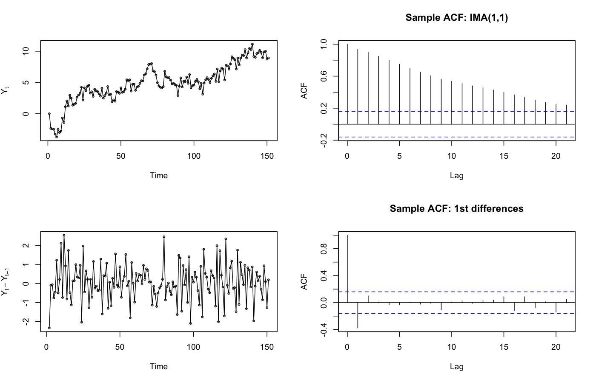
โค้ด arima.sim(list(order = c(0,1,1), ma = c(-0.5)), n = 150) สร้างข้อมูล 150 จุดจาก IMA(1,1) ที่ \(\theta=-0.5\) ข้อมูลเดิมเดินเป็น trend และ ACF ลดลงช้ามาก: lag 1 = 0.934, lag 5 = 0.749 และ lag 10 ยังเป็น 0.537 ซึ่งสูงกว่าเส้นขอบ \(2/\sqrt{150}=0.163\) มาก อาจารย์บอกว่าเมื่อข้อมูลไม่นิ่ง ACF "ลงช้า ๆ แบบช้ากว่า AR(p) ด้วยซ้ำ" (Class 7-1, 3:02) หลังทำผลต่างหนึ่งครั้ง ACF ที่ lag 1 = −0.376 และ lag 2 = 0.099 อยู่ในขอบ รูปแบบนี้คือ MA(1) ที่ตัดหลัง lag 1 ค่าทางทฤษฎีของ MA(1) ใน R คือ \(\rho_1=\theta/(1+\theta^2)=-0.5/1.25=-0.4\) ใกล้กับ −0.376 ที่ได้จากข้อมูล
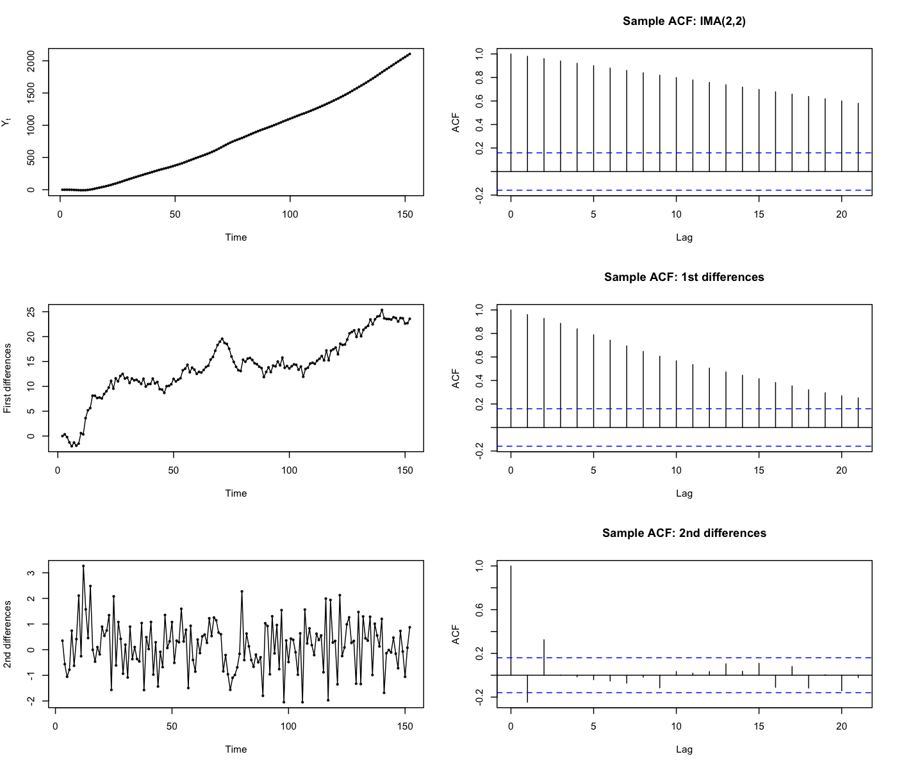
IMA(2,2) ที่ \(\theta_1=-0.3,\ \theta_2=0.3\) มี trend แรงกว่า ACF ของข้อมูลเดิมที่ lag 10 ยังเป็น 0.795 หลังผลต่างครั้งที่หนึ่ง ACF ที่ lag 10 ยังเป็น 0.471 แปลว่ายังมี trend เหลือ อาจารย์อธิบายว่าแถวกลาง "ยังมี linear trend หลงเหลืออยู่ ACF ลงช้าเหมือนเดิมแต่เร็วขึ้นกว่าข้างบน" (Class 7-1, 4:41) หลังผลต่างครั้งที่สอง ACF เหลือ lag 1 = −0.226 และ lag 2 = 0.284 ที่เกินขอบ ส่วน lag 3 = 0.016 อยู่ในขอบ ตรงกับ MA(2) ที่ตัดหลัง lag 2 ค่าทางทฤษฎีคือ −0.331 และ 0.254 อาจารย์เตือนว่าข้อมูลจำลอง "อาจไม่ perfect" รันใหม่แล้ว lag 2 อาจปริ่มเส้น (Class 7-1, 5:05)
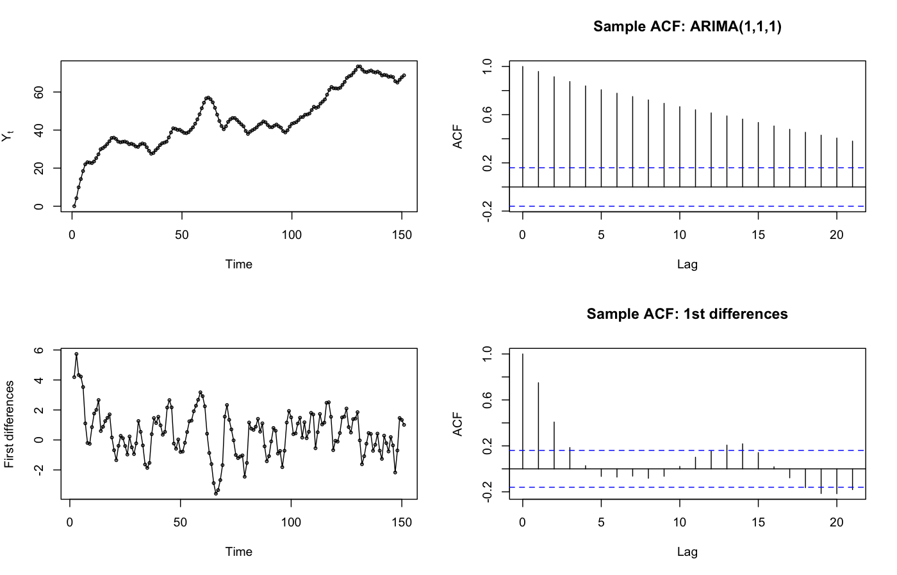
ARIMA(1,1,1) ที่ \(\phi=0.5,\ \theta=0.5\) หลังผลต่างหนึ่งครั้งได้ ACF lag 1 ถึง 4 เป็น 0.647, 0.198, −0.026, −0.120 ซึ่งลดลงแบบค่อย ๆ หาย ไม่ตัดทันที เพราะผลต่างเป็น ARMA(1,1) ที่มีทั้งส่วน AR และ MA ค่าทางทฤษฎีคือ 0.714, 0.357, 0.179 ซึ่งลดลงทีละครึ่งตาม \(\phi=0.5\) ข้อมูลจำลอง 150 จุดจึงใกล้เคียงแต่ไม่ตรงเป๊ะ
อาจารย์ให้เหตุผลที่สอนการจำลองข้อมูลสองข้อ ข้อแรก ใช้จำลองสถานการณ์ต่าง ๆ เพื่อศึกษาว่าแต่ละโมเดลมีรูปแบบอย่างไร ข้อที่สอง เมื่อเจอข้อมูลจริงที่มีรูปแบบคล้ายกัน จะรู้ว่าควรใช้โมเดลไหน (Class 7-1, 5:52) เหมือนแพทย์ที่ดูภาพเอกซเรย์ตัวอย่างของแต่ละโรคมาก่อน จึงจำอาการเมื่อเจอผู้ป่วยจริงได้
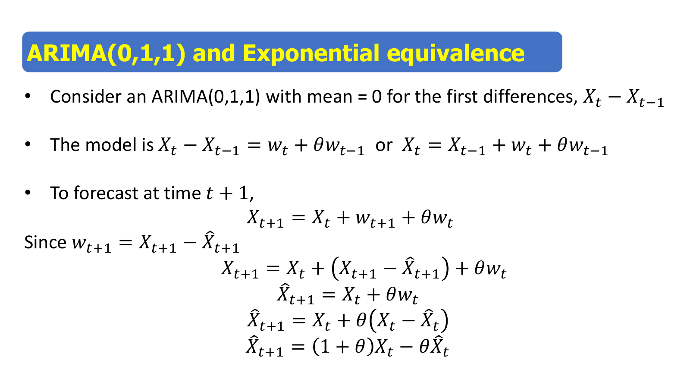
อาจารย์เริ่มหัวข้อนี้ว่า "ต้องเข้าใจก่อนว่ามันเป็นคนละโมเดลกัน" ARIMA เป็นโมเดลแบบ Box-Jenkins ส่วน exponential smoothing เป็นวิธีที่เรียนใน Lesson 4 แต่ "มันเทียบกันได้ใน p, d, q บางกรณี" (Class 7-1, 6:35–7:48) สไลด์นี้พิสูจน์กรณีแรก คือ ARIMA(0,1,1) ที่ mean = 0 for the first differences โมเดลคือผลต่างครั้งที่หนึ่งเป็น MA(1): \(X_t-X_{t-1}=w_t+\theta w_{t-1}\) ย้ายข้างได้ \(X_t=X_{t-1}+w_t+\theta w_{t-1}\)
เลื่อนเวลาไปหนึ่งช่วง: \(X_{t+1}=X_t+w_{t+1}+\theta w_t\)
\(w_{t+1}\) คือความคลาดเคลื่อนของการพยากรณ์ \(w_{t+1}=X_{t+1}-\hat X_{t+1}\) อาจารย์เทียบกับ regression ว่า "residual เกิดจาก data ลบด้วย model เหมือน e = Y − Ŷ" (Class 7-1, 9:16) และเขียนสีแดงบนสไลด์ว่า \(e_t=Y_t-\hat Y_t\)
\(X_{t+1}=X_t+(X_{t+1}-\hat X_{t+1})+\theta w_t\)
\(0=X_t-\hat X_{t+1}+\theta w_t\) จึงได้ \(\hat X_{t+1}=X_t+\theta w_t\)
\(w_t=X_t-\hat X_t\) แทนลงไป: \(\hat X_{t+1}=X_t+\theta(X_t-\hat X_t)\)
\(\hat X_{t+1}=(1+\theta)X_t-\theta\hat X_t\)
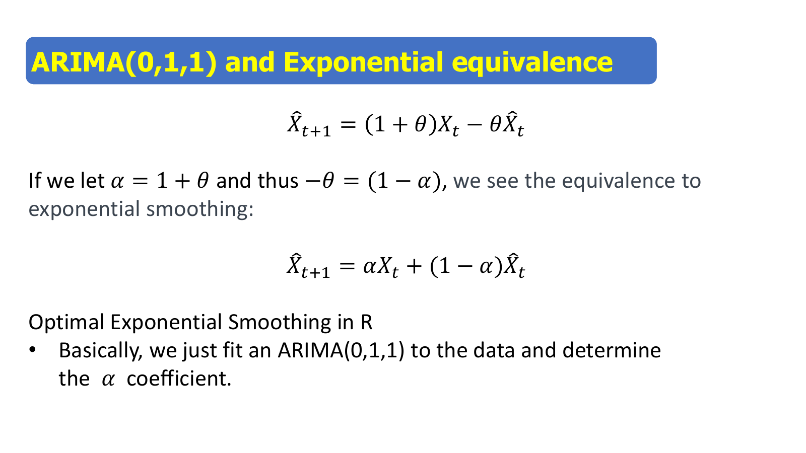
ขั้นสุดท้ายคือตั้งชื่อใหม่ ให้ \(\alpha=1+\theta\) แล้ว \(-\theta=1-\alpha\) สมการจึงกลายเป็น \(\hat X_{t+1}=\alpha X_t+(1-\alpha)\hat X_t\) ซึ่งเป็นสูตร single exponential smoothing \(F_{t+1}=\alpha X_t+(1-\alpha)F_t\) ใน Lesson 4 พอดี อาจารย์ย้ำว่า "พารามิเตอร์มันสามารถ transfer หรือคำนวณเทียบกันได้" (Class 7-1, 11:44) สไลด์สรุปการใช้งานว่า Basically, we just fit an ARIMA(0,1,1) to the data and determine the α coefficient. คือถ้าต้องการ α ที่ดีที่สุดของ exponential smoothing ให้ fit ARIMA(0,1,1) แล้วแปลง θ ที่ได้เป็น α
ARIMA(0,1,1) มี \(\theta=-0.6\) ข้อมูลล่าสุด \(X_t=50\) ค่าพยากรณ์ของเวลา t ที่ทำไว้ก่อนหน้าคือ \(\hat X_t=46\) จงหา α และ \(\hat X_{t+1}\)
\(\alpha=1+\theta=1+(-0.6)=0.4\)
\(\hat X_{t+1}=0.4(50)+(1-0.4)(46)=20+27.6=47.6\)
\(w_t=X_t-\hat X_t=50-46=4\) แล้ว \(\hat X_{t+1}=X_t+\theta w_t=50+(-0.6)(4)=50-2.4=47.6\)
จำลอง ARIMA(0,1,1) ที่ \(\theta=-0.6\) จำนวน 300 จุด แล้ว fit สองวิธี: arima(x, order=c(0,1,1)) ได้ ma1 = −0.6129 ส่วน HoltWinters(x, beta=FALSE, gamma=FALSE) ได้ alpha = 0.386 ซึ่งตรงกับ \(1+(-0.6129)=0.3871\) จนถึงทศนิยมตำแหน่งที่สอง
ช่วงของค่าที่ใช้ได้: exponential smoothing ต้องการ \(0<\alpha\le 1\) จึงตรงกับ \(-1<\theta\le 0\) ถ้า R ให้ θ เป็นบวก เช่น 0.3 จะได้ α = 1.3 ซึ่งเกิน 1 แปลว่าข้อมูลไม่เข้ากับ single exponential smoothing แม้ ARIMA(0,1,1) จะยัง invertible อยู่ ค่า θ ใกล้ −1 ให้ α ใกล้ 0 คือพยากรณ์เรียบมาก เชื่อค่าเก่า ส่วน θ ใกล้ 0 ให้ α ใกล้ 1 คือพยากรณ์ตามค่าล่าสุดเกือบทั้งหมด เหมือนพนักงานใหม่ที่เชื่อข่าวล่าสุดทุกเรื่อง
สไลด์และ R เขียน MA ด้วยเครื่องหมายบวก \(w_t+\theta w_{t-1}\) จึงได้ \(\alpha=1+\theta\) แต่ในวิดีโอ Class 7-2 อาจารย์เขียน MA(1) เป็น \(X_t=w_t-\theta w_{t-1}\) ถ้าโจทย์ใช้เครื่องหมายลบ ผลการพิสูจน์จะเป็น \(\hat X_{t+1}=(1-\theta)X_t+\theta\hat X_t\) และ \(\alpha=1-\theta\) ก่อนตอบให้ดูเครื่องหมายในโจทย์ก่อนเสมอ
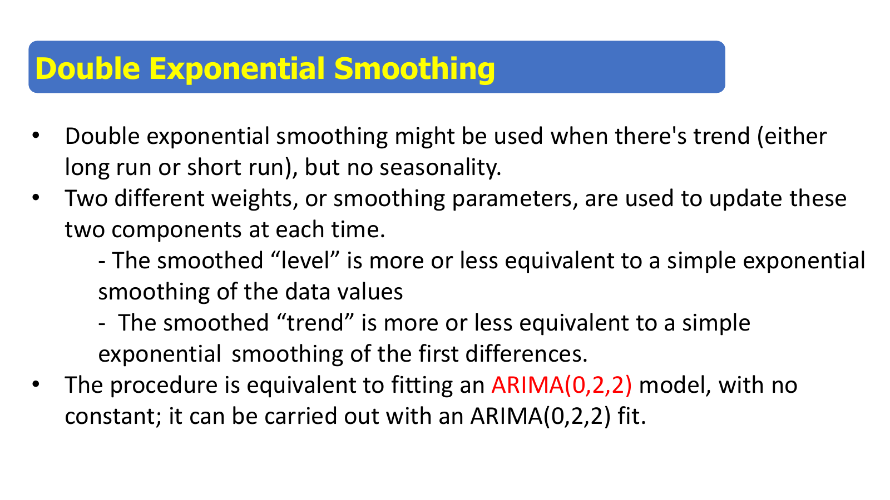
Double exponential smoothing (Holt) ใช้ when there's trend (either long run or short run), but no seasonality มีสองส่วนที่ปรับทุกเวลา ส่วน level ซึ่งเทียบได้กับ single exponential smoothing ของข้อมูล และส่วน trend ซึ่งเทียบได้กับ single exponential smoothing ของผลต่างครั้งที่หนึ่ง สไลด์สรุปว่า The procedure is equivalent to fitting an ARIMA(0,2,2) model, with no constant เหตุผลที่ต้องเป็น d = 2: ส่วน trend คือ smoothing ของผลต่าง ถ้าต้อง smooth ผลต่างอีกชั้น ข้อมูลจึงต้องทำผลต่างสองครั้งจึงจะนิ่ง ส่วน q = 2 มาจากการมีพารามิเตอร์ smoothing สองตัว
อาจารย์บอกว่ามีการพิสูจน์ในหลายแหล่ง "แต่ผมจะไม่ลงดีเทล" (Class 7-1, 12:06) และบอกว่าคาบหลัง ๆ จะมีตารางเทียบ Box-Jenkins กับ exponential smoothing ว่าคู่ไหน equivalent กัน ระดับที่ควรจำสำหรับสอบคือคู่ที่เทียบกัน: single ES คู่กับ ARIMA(0,1,1) และ double ES คู่กับ ARIMA(0,2,2)
| Exponential smoothing | ARIMA ที่เทียบได้ | เหตุผลของ d | เหตุผลของ q |
|---|---|---|---|
| Single (simple) | ARIMA(0,1,1) | level เดินได้ ต้อง diff 1 ครั้ง | มี α ตัวเดียว |
| Double (Holt) | ARIMA(0,2,2) | มี trend ต้อง diff 2 ครั้ง | มี α และ β สองตัว |
อาจารย์เปิดหัวข้อนี้ว่า "หัวข้อนี้เป็นหัวข้อที่สำคัญมาก" และทวนว่าอนุกรมเวลาที่ไม่นิ่งเกิดจากสองสาเหตุหลัก สาเหตุแรกคือ trend ขาขึ้น ขาลง หรือโค้ง ซึ่งแก้ด้วย differencing สาเหตุที่สองคือ non-constant variance คือการแกว่งไม่สม่ำเสมอ ช่วงแรกแกว่งน้อย ช่วงหลังแกว่งมาก ซึ่งแก้ด้วย transformation หลักการที่อาจารย์ย้ำคือ "ทำให้มันนิ่งก่อนแล้วศึกษาเชิงลึก ไม่ว่าจะใช้โมเดลไหน" (Class 7-1, 12:36–13:21)
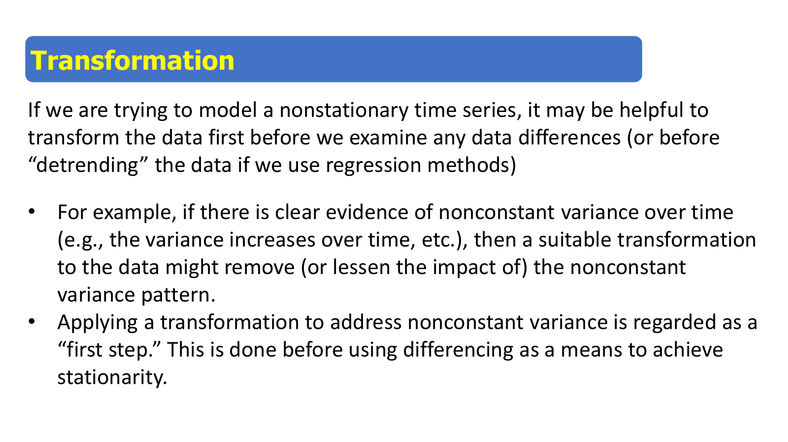
สไลด์บอกว่าถ้าข้อมูลไม่นิ่ง ควรแปลงข้อมูลก่อนดูผลต่าง หรือก่อน detrend ด้วย regression ถ้ามี clear evidence of nonconstant variance over time การแปลงที่เหมาะสมช่วยลดหรือกำจัดปัญหานี้ได้ และการแปลงถือเป็น “first step.” ที่ต้องทำก่อน differencing อาจารย์เทียบกับ regression ว่าความแปรปรวนคงที่คือ homoscedasticity ส่วนความแปรปรวนไม่คงที่คือ heteroscedasticity และอธิบายว่าเป็นสัญญาณของ lack of fit: ช่วงที่ residual แกว่งมากคือช่วงที่โมเดล fit ไม่ดี (Class 7-1, 13:30–14:41)
วิธีแก้ที่อาจารย์บอกว่าง่ายที่สุดคือ take log ซึ่งเป็นการ "บีบข้อมูล" ให้แกว่งน้อยลง อีกวิธีคือ square root อาจารย์ชอบ log มากกว่าด้วยเหตุผลสองข้อ ข้อแรก แปลงกลับด้วย exponential ซึ่งเข้าใจง่ายกว่ายกกำลังสอง ข้อที่สอง ค่าที่แปลงกลับจาก log จะไม่ติดลบ เหมาะกับข้อมูลอย่างยอดขาย (Class 7-1, 15:20–17:07) หลัง take log แล้ว "เรากำลังทำอนุกรมเวลาของ log X_t ไม่ใช่ X_t" (Class 7-1, 17:47)
ช่วงแรกระดับ 100 แกว่ง 90 ถึง 110 ช่วงหลังระดับ 400 แกว่ง 360 ถึง 440 คือแกว่ง ±10% เท่ากันทั้งสองช่วง
ช่วงแรก \(110-90=20\) ช่วงหลัง \(440-360=80\) ต่างกัน 4 เท่า
ช่วงแรก \(\sqrt{110}-\sqrt{90}=10.488-9.487=1.001\) ช่วงหลัง \(\sqrt{440}-\sqrt{360}=20.976-18.974=2.002\) ลดเหลือต่างกัน 2 เท่า
ช่วงแรก \(\ln110-\ln90=4.7005-4.4998=0.2007\) ช่วงหลัง \(\ln440-\ln360=6.0868-5.8861=0.2007\) เท่ากันพอดี
เปรียบได้กับการดูราคาหุ้น หุ้นราคา 10 บาทขึ้น 1 บาท กับหุ้นราคา 1,000 บาทขึ้น 100 บาท ถ้าดูเป็นบาทจะคิดว่าหุ้นตัวหลังผันผวนกว่า 100 เท่า แต่ถ้าดูเป็นร้อยละ ทั้งสองตัวขึ้น 10% เท่ากัน log คือการเปลี่ยนมุมมองจาก "บาท" เป็น "ร้อยละ"
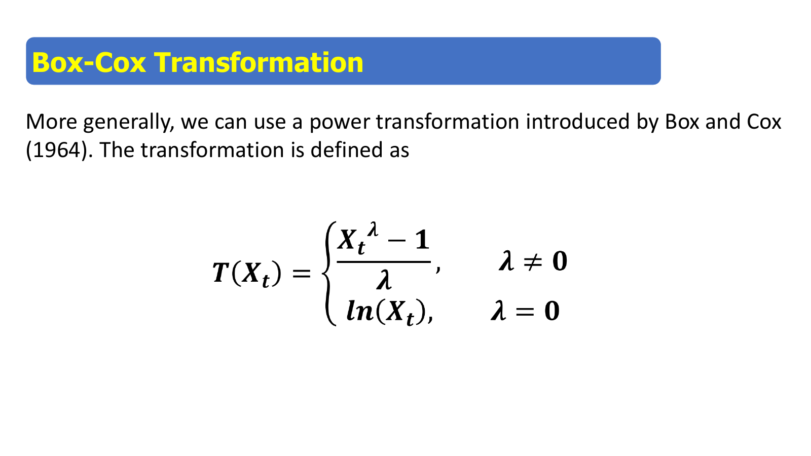
Box-Cox (1964) รวมการแปลงแบบยกกำลังไว้ในสูตรเดียว ถ้า \(\lambda\ne0\) ใช้ \(T(X_t)=\dfrac{X_t^{\lambda}-1}{\lambda}\) และถ้า \(\lambda=0\) ใช้ \(T(X_t)=\ln(X_t)\) อาจารย์เขียนบนสไลด์ว่า λ = 1/2 คือ \(\sqrt{x}\) และ λ = 1/10 คือ \(x^{1/10}\) แล้วเน้นว่า "ถ้า λ เป็น 0 มันจะไม่ใช่ x กำลัง 0 แต่เป็น log x หรือ ln x" (Class 7-1, 18:16–18:44) ค่าลบ 1 และการหารด้วย λ มีไว้เพื่อให้สูตรต่อเนื่อง เมื่อ λ เข้าใกล้ 0 ค่าของสูตรบนจะเข้าใกล้ ln x
\((100^1-1)/1=99\) คือข้อมูลเดิมลบ 1 รูปร่างของกราฟไม่เปลี่ยน จึงเท่ากับไม่แปลง
\((100^{0.5}-1)/0.5=(10-1)/0.5=18\) ซึ่งเป็น \(2(\sqrt{x}-1)\) รูปร่างเหมือน square root
\(100^{0.01}=e^{0.01\ln100}=e^{0.04605}=1.04713\) จึงได้ \((1.04713-1)/0.01=4.713\)
\(100^{0.001}=e^{0.004605}=1.004616\) จึงได้ \(4.616\)
\(\ln100=4.605\) ค่าในข้อ 3 และ 4 เข้าใกล้ค่านี้ นี่คือเหตุผลที่สูตรกำหนดให้ λ = 0 ใช้ log
\((100^{-1}-1)/(-1)=(0.01-1)/(-1)=0.99\) รูปร่างเหมือน \(1/x\) ที่กลับทิศให้ค่ามากยังมาก
| λ | การแปลงที่ได้ | ใช้เมื่อ |
|---|---|---|
| 1 | ไม่แปลง | การแกว่งคงที่อยู่แล้ว |
| 0.5 | \(\sqrt{x}\) | การแกว่งโตตามระดับ แต่ไม่มาก |
| 0 | \(\ln x\) | การแกว่งโตเป็นสัดส่วนกับระดับ |
| −0.5 | \(1/\sqrt{x}\) | การแกว่งโตเร็วกว่าระดับ |
| −1 | \(1/x\) | การแกว่งโตเร็วมาก |
Box-Cox ใช้ได้กับข้อมูลที่เป็นบวกเท่านั้น เพราะ log ของศูนย์หรือค่าลบหาไม่ได้ ถ้าข้อมูลมีค่าลบ ต้องบวกค่าคงที่ให้เป็นบวกทุกตัวก่อน อาจารย์บอกว่าเรื่องนี้เคยเรียนในวิชา regression มาแล้ว ความต่างคือครั้งนี้ใช้กับอนุกรมเวลาโดยตรง (Class 7-1, 19:14–20:04)
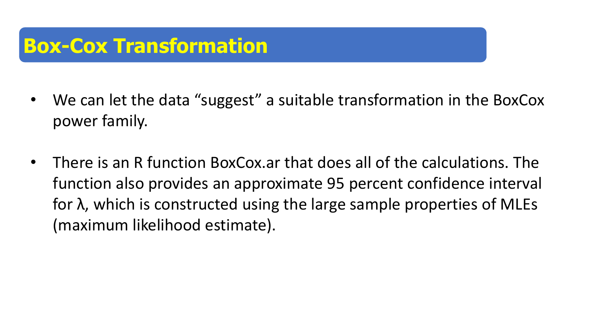
แทนที่จะเดา λ เอง ให้ข้อมูล “suggest” ค่าที่เหมาะสม ฟังก์ชัน BoxCox.ar ใน package TSA คำนวณ log-likelihood ของแต่ละ λ แล้วเลือก λ ที่ทำให้ log-likelihood สูงสุด ซึ่งเป็น maximum likelihood estimate และให้ approximate 95 percent confidence interval for λ กติกาที่อาจารย์ใช้: ถ้าช่วงเชื่อมั่นคลุม 0 ใช้ log ถ้าไม่คลุม 0 ต้องใช้การแปลงแบบอื่น อาจารย์ "เล็ง log ไว้เป็นหลัก" เพราะ λ อย่าง 1/10 หรือ 1/6 "แปลงกลับยากและความหมายแปลยาก" (Class 7-1, 18:44–19:52) อาจารย์บอกด้วยว่า BoxCox.ar รันนาน เพราะต้องประมาณ maximum likelihood หลายรอบ (Class 7-1, 26:15)
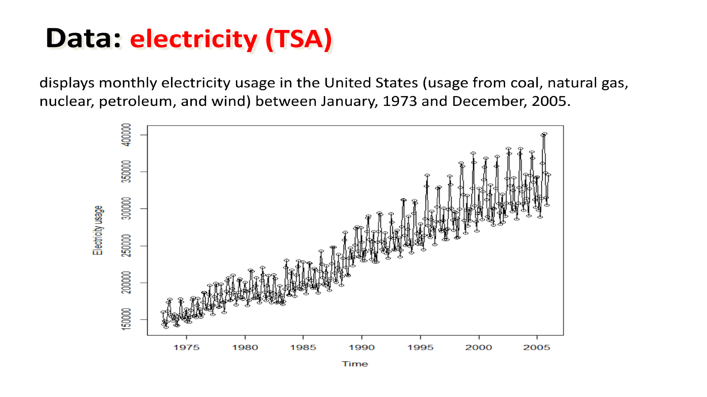
ข้อมูล electricity คือปริมาณการใช้ไฟฟ้ารายเดือนของสหรัฐอเมริกาจากถ่านหิน ก๊าซธรรมชาติ นิวเคลียร์ ปิโตรเลียม และลม ตั้งแต่ January, 1973 and December, 2005 รวม 396 เดือน อาจารย์บอกว่าตำราหลายเล่มใช้ข้อมูลนี้เป็น case study เพราะ "มีทั้ง trend และ seasonal" (Class 7-1, 21:04) อ่านจากกราฟ: ปี 1975 ค่าอยู่ราว 140,000 ถึง 180,000 แกว่งกว้างประมาณ 40,000 ปี 2005 ค่าอยู่ราว 290,000 ถึง 400,000 แกว่งกว้างประมาณ 110,000 การแกว่งโตขึ้นเกือบสามเท่าตามระดับ นี่คือ non-constant variance ส่วนระดับที่ขึ้นจาก 150,000 เป็น 350,000 คือ trend
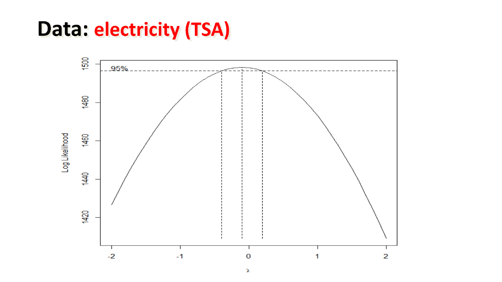
กราฟนี้คือผลของ BoxCox.ar(electricity) แกนนอนคือ λ จาก −2 ถึง 2 แกนตั้งคือ log-likelihood เส้นโค้งเป็นรูปคว่ำ (concave) จุดสูงสุดอยู่ที่ λ ประมาณ −0.1 ซึ่งให้ log-likelihood ราว 1,498 เส้นประแนวนอนที่เขียนว่า 95% ตัดเส้นโค้งที่ λ ประมาณ −0.4 และ 0.2 นี่คือช่วงเชื่อมั่น 95% ของ λ ช่วงนี้คลุม 0 จึงเลือก log อาจารย์อ่านกราฟนี้ว่า "ขอบเขตล่างกับขอบเขตบนมันคลุมศูนย์ ผมจะ take log" (Class 7-1, 21:57–22:10) ถ้าเลือก λ = −0.1 ตรง ๆ ก็ใช้ได้ทางสถิติ แต่ log ตีความง่ายกว่าและอยู่ในช่วงเชื่อมั่น
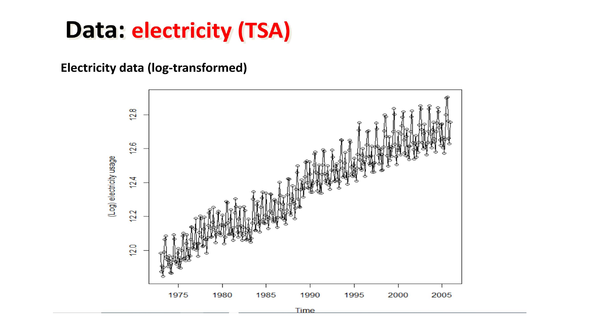
หลัง take log ค่าอยู่ราว 11.9 ถึง 12.9 ช่วงปี 1975 แกว่งจากราว 11.85 ถึง 12.1 กว้างราว 0.25 ช่วงปี 2005 แกว่งจากราว 12.6 ถึง 12.9 กว้างราว 0.3 ความกว้างใกล้กันแล้ว ปัญหา non-constant variance หมดไป แต่ trend ขาขึ้นยังอยู่ อาจารย์สรุปว่า "non-constant variance แก้ไขปัญหาไปแล้ว แต่ trend มันยังมีอยู่ ก็ต้อง differencing" (Class 7-1, 23:03)
คำถาม (Class 7-1, 23:11): "take log ของ differencing หรือ differencing ของ log อันไหนง่ายกว่า" คำตอบของอาจารย์: log ก่อน แล้วค่อยทำผลต่าง คือ \(\nabla\log X_t=\log X_t-\log X_{t-1}\) ง่ายกว่าเวลาแปลงกลับและตีความ เหตุผลเพิ่มเติม: ผลต่างของข้อมูลมีค่าลบได้ ถ้าทำผลต่างก่อนจะ take log ไม่ได้ และสไลด์หน้า 6, 16, 24 ก็ย้ำว่าการแปลงทำก่อน differencing เสมอ
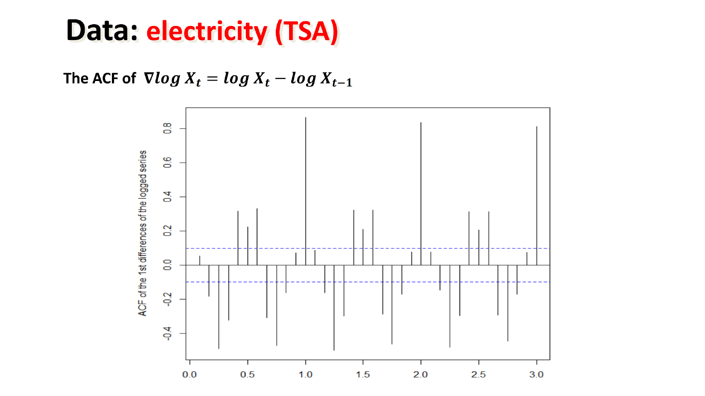
\(\nabla\log X_t=\log X_t-\log X_{t-1}=\log(X_t/X_{t-1})\) มีความหมายประมาณอัตราการเปลี่ยนแปลงรายเดือน เช่น เดือนก่อนใช้ไฟ 300,000 เดือนนี้ 315,000 ได้ \(\log(1.05)=0.0488\) ใกล้กับ 5% แกนนอนของ ACF นับเป็นปี เพราะข้อมูลเป็นรายเดือนที่ frequency = 12 lag 1.0 คือ 12 เดือน ACF ที่ lag 1.0, 2.0, 3.0 สูงราว 0.87, 0.84, 0.81 ส่วน lag 0.25 (3 เดือน) และ 0.75 (9 เดือน) ติดลบราว −0.49 และ −0.47 รูปแบบนี้คือ seasonality: เดือนเดียวกันของปีต่างกันมีพฤติกรรมเหมือนกัน อาจารย์อธิบายว่า "หน้าร้อนคนเปิดแอร์เยอะ มันก็จะเป็นรอบของมัน" (Class 7-1, 27:56) และบอกว่าจะสอนต่อในเรื่อง SARIMA ตอนนี้ trend และ non-constant variance หมดแล้ว เหลือเพียง seasonal pattern (Class 7-1, 25:28) อาจารย์ให้การบ้านว่าลองทำ ACF ของ \(X_t\) เดิมเทียบด้วย ซึ่งจะลดลงช้ามากเพราะมีทั้ง trend และ non-constant variance (Class 7-1, 27:11)
library(TSA)
data(electricity)
plot(electricity, ylab="Electricity usage", xlab="Time", type="o")
BoxCox.ar(electricity)
plot(log(electricity), ylab="(Log) electricity usage", xlab="Time", type="o")
acf(diff(log(electricity)), main="", lag.max=36,
ylab="ACF of the 1st differences of the logged series")| โค้ด | ทำอะไร |
|---|---|
| library(TSA); data(electricity) | โหลด package TSA และข้อมูล electricity ซึ่งเป็น ts รายเดือน |
| plot(..., type="o") | วาดเส้นพร้อมจุด ได้สไลด์หน้า 9 |
| BoxCox.ar(electricity) | คำนวณ log-likelihood ของ λ หลายค่า วาดกราฟพร้อมช่วงเชื่อมั่น 95% ได้สไลด์หน้า 10 |
| log(electricity) | ln ของทุกเดือน (log ใน R คือฐาน e) ได้สไลด์หน้า 11 |
| diff(log(electricity)) | ผลต่างครั้งที่หนึ่งของ log ลำดับคือ log ก่อน แล้ว diff |
| lag.max=36 | แสดง ACF ถึง 36 เดือน คือ 3 ปี เพื่อให้เห็น seasonal ซ้ำสามรอบ ได้สไลด์หน้า 12 |
ในเครื่องที่ทำบทเรียนนี้ไม่มี package TSA จึงยังไม่ได้รันส่วนนี้ ค่าที่อ่านในหัวข้อนี้อ่านจากกราฟในสไลด์ ถ้าต้องการใช้ Box-Cox โดยไม่มี TSA ใช้ forecast::BoxCox.lambda(electricity) แทนได้ แต่วิธีเลือก λ ต่างกัน ค่าที่ได้อาจไม่ตรงกับสไลด์
Model identification คือการระบุว่า p, d และ q ควรเป็นเท่าไร ยังไม่ใช่การประมาณค่าพารามิเตอร์ อาจารย์เล่าว่าสมัยก่อนต้องดูกราฟ ACF และ PACF ด้วยตา แต่บางครั้งกราฟไม่ชัดว่า p หรือ q ควรเป็นเท่าไร จึงมีเครื่องมือที่เป็นตัวเลขมาช่วย คือ EACF, AIC และ BIC ผลที่ได้คือ "ค่า p ที่เป็นไปได้ ค่า q ที่เป็นไปได้" ไม่ใช่คำตอบเดียว (Class 7-1, 28:28–29:37) เปรียบเหมือนนักสืบที่ใช้หลักฐานหลายชิ้นตัดผู้ต้องสงสัยให้เหลือสองสามคน แล้วค่อยสอบสวนต่อ
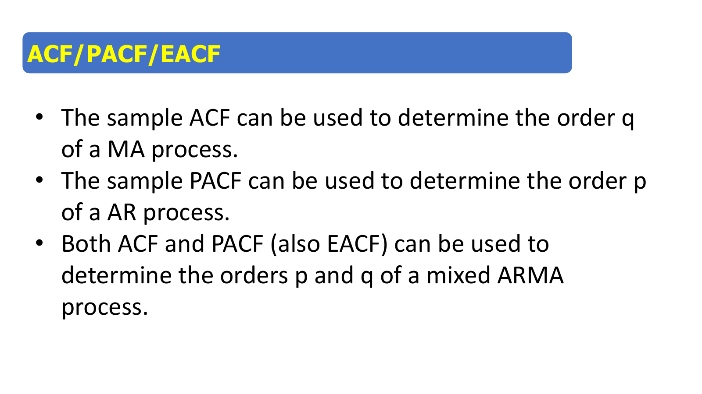
สไลด์สรุปสามข้อ: ACF ใช้หา q ของ MA, PACF ใช้หา p ของ AR และ Both ACF and PACF (also EACF) ใช้หา p และ q ของ ARMA ที่ผสมกัน เหตุผลที่ ACF ใช้กับ MA คือ MA(q) มี ACF เป็นศูนย์หลัง lag q เพราะค่าที่ห่างกันเกิน q ช่วงไม่มี white noise ตัวไหนร่วมกัน ส่วน PACF ของ AR(p) เป็นศูนย์หลัง lag p เพราะเมื่อรู้ค่าย้อนหลัง p ตัวแล้ว ค่าที่เก่ากว่านั้นไม่ให้ข้อมูลเพิ่ม (พิสูจน์ใน Lesson 5 และ Lesson 6 หัวข้อ 8)
| โมเดล | ACF | PACF | EACF |
|---|---|---|---|
| AR(p) | ค่อย ๆ ลดลง (tails off) | ตัดหลัง lag p | สามเหลี่ยมศูนย์เริ่มที่แถว p คอลัมน์ 0 |
| MA(q) | ตัดหลัง lag q | ค่อย ๆ ลดลง | สามเหลี่ยมศูนย์เริ่มที่แถว 0 คอลัมน์ q |
| ARMA(p,q) | ค่อย ๆ ลดลง | ค่อย ๆ ลดลง | สามเหลี่ยมศูนย์เริ่มที่แถว p คอลัมน์ q |
ตัวอย่างการอ่าน: ถ้า ACF มีแท่งเกินขอบที่ lag 1 และ 2 แล้วหลังจากนั้นอยู่ในขอบ ขณะที่ PACF ค่อย ๆ ลดลง ให้เสนอ MA(2) ถ้า ACF ลดลงทีละครึ่ง 0.5, 0.25, 0.125 และ PACF มีแท่งเดียวที่ lag 1 ให้เสนอ AR(1) ถ้าทั้งสองกราฟค่อย ๆ ลดลง ให้ใช้ EACF หาจุดยอดของสามเหลี่ยม "o" ซึ่งอธิบายไว้ใน Lesson 6 หัวข้อ 11
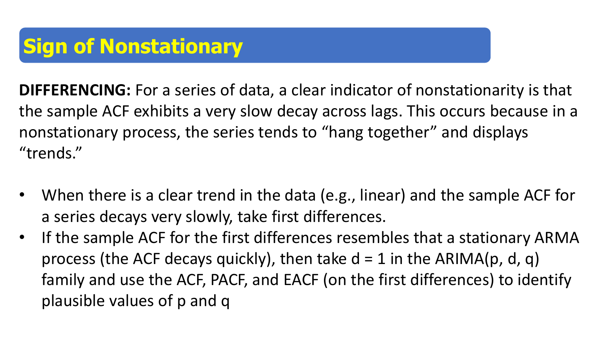
สัญญาณที่ชัดที่สุดของข้อมูลไม่นิ่งคือ the sample ACF exhibits a very slow decay across lags เหตุผลคือข้อมูลไม่นิ่ง tends to “hang together” and displays “trends.” ค่าที่อยู่ใกล้กันมีขนาดใกล้กันเสมอ เช่นข้อมูลที่เพิ่มจาก 10 เป็น 100 ค่าช่วงต้นต่ำกว่าค่าเฉลี่ยทั้งหมด ค่าช่วงปลายสูงกว่าค่าเฉลี่ยทั้งหมด ผลคูณของส่วนเบี่ยงเบนที่ห่างกันหลาย lag จึงยังเป็นบวกและ ACF ไม่ลดลง ขั้นตอนตามสไลด์: ถ้ามี trend ชัดและ ACF ลดลงช้ามาก ให้ทำผลต่างครั้งที่หนึ่ง ถ้า ACF ของผลต่าง resembles that a stationary ARMA process คือลดลงเร็ว ให้ใช้ d = 1 แล้วใช้ ACF, PACF, EACF ของผลต่างหา p และ q
ACF lag 10 = 0.537 ยังเกินขอบ 0.163 มาก แปลว่าลดลงช้า ทำผลต่าง
ACF lag 1 = −0.376, lag 2 = 0.099 อยู่ในขอบตั้งแต่ lag 2 ลดลงเร็ว หยุดที่ d = 1 แล้วอ่านต่อว่า q = 1
ACF lag 10 = 0.471 ยังลดลงช้า ทำผลต่างอีกครั้ง
lag 1 = −0.226, lag 2 = 0.284, lag 3 = 0.016 ลดลงเร็ว หยุดที่ d = 2 แล้วอ่านต่อว่า q = 2
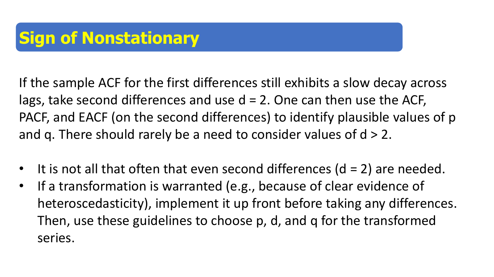
ถ้าผลต่างครั้งที่หนึ่งยังลดลงช้า ให้ทำผลต่างครั้งที่สองและใช้ d = 2 สไลด์ย้ำว่า There should rarely be a need to consider values of d > 2. และแม้ d = 2 ก็ไม่ค่อยจำเป็น ข้อสุดท้าย ถ้ามีหลักฐานของ heteroscedasticity ให้ implement it up front before taking any differences. คือแปลงข้อมูลก่อน แล้วใช้กฎข้างต้นเลือก p, d, q กับข้อมูลที่แปลงแล้ว อาจารย์เตือนในขั้นสรุปว่า "อย่าให้ differencing เยอะเกินไป" (Class 7-1, 46:28) เหตุผลแสดงด้วยตัวเลขได้ดังนี้
ให้ \(X_t=w_t\) เป็น white noise ซึ่งไม่ต้อง diff เลย
\(Y_t=X_t-X_{t-1}=w_t-w_{t-1}\) ซึ่งเป็น MA(1) ที่ \(\theta=-1\)
\(\gamma_0=Var(w_t-w_{t-1})=\sigma^2+\sigma^2=2\sigma^2\) และ \(\gamma_1=Cov(w_t-w_{t-1},\,w_{t-1}-w_{t-2})=-\sigma^2\) จึงได้ \(\rho_1=-\sigma^2/2\sigma^2=-0.5\)
ข้อมูลที่ไม่มีโครงสร้างอะไรเลยกลับดูเหมือน MA(1) และ \(|\theta|=1\) ทำให้ไม่ invertible การประมาณค่าจึงมีปัญหา
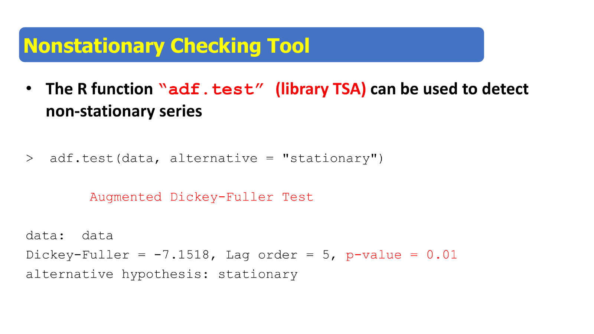
นอกจากดูกราฟด้วยตา ยังใช้การทดสอบทางสถิติได้ ฟังก์ชัน “adf.test” ทำ Augmented Dickey-Fuller Test สมมติฐานคือ H0: ข้อมูลไม่นิ่ง (มี unit root) และ H1: ข้อมูลนิ่ง ซึ่งตรงกับ alternative = "stationary" ในคำสั่ง อาจารย์ย้ำว่า "อย่าลืมว่า H1 คือนิ่ง ถ้าคุณ reject H0 แสดงว่าอนุกรมเวลาคุณนิ่ง" (Class 7-1, 30:52) ผลในสไลด์ใช้กับ times.txt ได้ Dickey-Fuller = −7.1518 และ p-value = 0.01 ซึ่งน้อยกว่า 0.05 จึง reject H0 สรุปว่าข้อมูล times.txt นิ่ง ไม่ต้อง diff (d = 0)
\(X_t=\phi X_{t-1}+w_t\) ลบ \(X_{t-1}\) ทั้งสองข้าง: \(\nabla X_t=(\phi-1)X_{t-1}+w_t=\gamma X_{t-1}+w_t\)
ถ้า \(\phi=1\) คือ random walk ซึ่งไม่นิ่ง จะได้ \(\gamma=0\) ถ้า \(|\phi|<1\) จะได้ \(\gamma<0\) ข้อมูลนิ่ง จึงทดสอบ H0: \(\gamma=0\) กับ H1: \(\gamma<0\)
เพิ่มพจน์ \(\nabla X_{t-1},\dots,\nabla X_{t-k}\) ในสมการ เพื่อรองรับข้อมูลที่ไม่ใช่ AR(1) จำนวน k คือ Lag order ค่าเริ่มต้นคือ \(\lfloor (n-1)^{1/3}\rfloor\) สำหรับ n = 150 ได้ \(149^{1/3}=5.30\) ปัดลงเป็น 5 ตรงกับ Lag order = 5 ในผลลัพธ์
Dickey-Fuller = −7.1518 ติดลบมาก แปลว่า \(\hat\gamma\) ติดลบชัด ข้อมูลดึงกลับเข้าหาค่าเฉลี่ยแรง จึงนิ่ง
ฟังก์ชันนี้ใช้ตารางค่าวิกฤต และแสดงได้ต่ำสุด 0.01 พร้อมคำเตือนว่า p-value จริงน้อยกว่าที่แสดง ค่า 0.01 จึงอ่านว่า p-value ≤ 0.01
ข้อควรระวัง: ADF ตรวจ trend แบบ unit root ได้ดี แต่ไม่ได้ตรวจ non-constant variance โดยตรง จึงยังต้องดูกราฟข้อมูลประกอบเสมอ ฟังก์ชัน adf.test อยู่ใน package tseries (สไลด์เขียนว่า library TSA เพราะ TSA โหลด tseries ให้ด้วย)
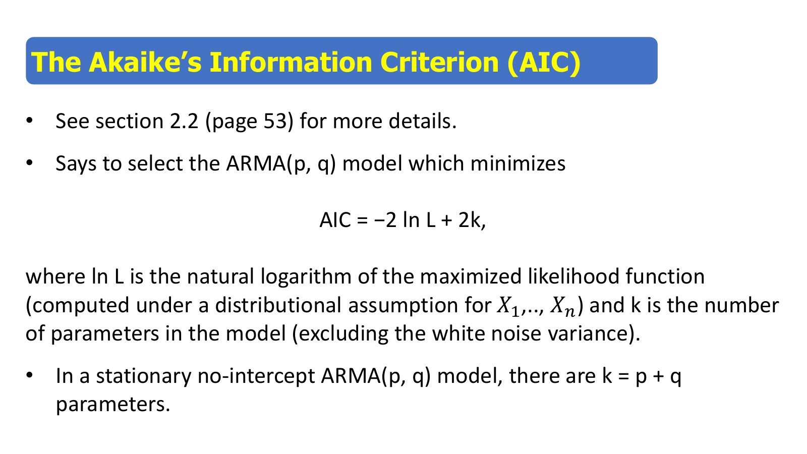
AIC ให้เลือกโมเดล ARMA(p, q) ที่ทำให้ \(AIC=-2\ln L+2k\) น้อยที่สุด สไลด์อ้าง Section 2.2 หน้า 53 ของตำรา \(\ln L\) คือ log ของ likelihood ที่ทำให้สูงสุดแล้ว ส่วน k คือจำนวนพารามิเตอร์ในโมเดล สไลด์เขียนว่า k excluding the white noise variance และใน ARMA(p, q) ที่ไม่มี intercept there are k = p + q parameters.
อาจารย์อธิบาย likelihood ด้วยภาษาง่าย ๆ ว่า "โอกาสที่โมเดลนี้จะเกิด" likelihood สูงแปลว่าโมเดลนี้มีแนวโน้มสร้างข้อมูลชุดที่เห็นได้ การ take log เป็นเพียงการบีบตัวเลขที่ใหญ่มาก ลำดับมากน้อยยังเหมือนเดิม (Class 7-1, 32:07–32:55) อาจารย์พูดเพิ่มว่า intercept และความแปรปรวน \(\sigma^2\) ของ white noise ก็เป็นพารามิเตอร์ที่โมเดลประมาณให้ (Class 7-1, 34:16–34:43) ซึ่งตรงกับวิธีนับของ R แต่ต่างจากข้อความในสไลด์ การนับต่างกันทำให้ค่า AIC ต่างกันเป็นค่าคงที่ ลำดับของโมเดลที่มีโครงสร้างพารามิเตอร์เหมือนกันจึงไม่เปลี่ยน
log likelihood = −247.66 (ค่าละเอียด −247.6564) โมเดลมี ar1, ma1, intercept และ \(\sigma^2\)
\(-2(-247.6564)=495.3127\)
\(AIC=495.3127+2(4)=503.3127\) ตรงกับ aic = 503.31 ในผลลัพธ์และช่อง [2,2] ของตาราง AIC
\(AIC=495.3127+2(2)=499.3127\) ค่าต่างไป 4 แต่ทุกโมเดลที่มี intercept และ \(\sigma^2\) ถูกหักเท่ากัน
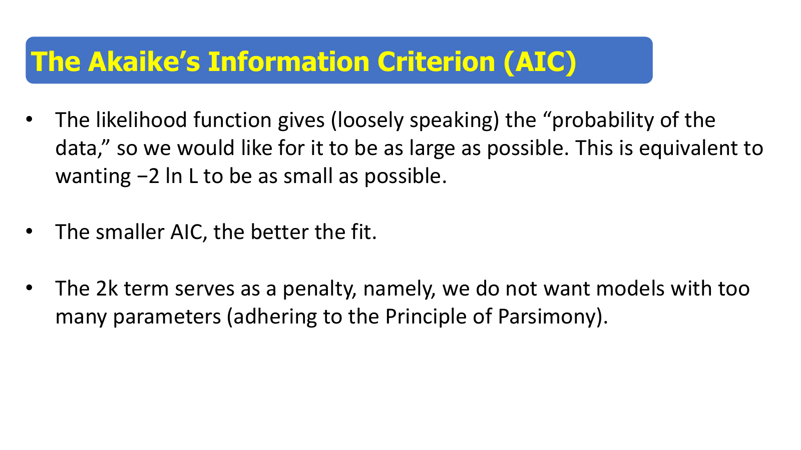
อาจารย์ถามในคลิปว่า "AIC มากดีหรือน้อยดี" แล้วเฉลยว่าน้อยดี (Class 7-1, 35:09–35:53) เหตุผลตามสไลด์: likelihood คือ “probability of the data,” จึงอยากให้สูงที่สุด ซึ่งเท่ากับอยากให้ \(-2\ln L\) ต่ำที่สุด The smaller AIC, the better the fit. ส่วน 2k เป็น penalty ที่ไม่ให้โมเดลมีพารามิเตอร์มากเกินไป ตามหลัก Principle of Parsimony หรือ "ให้มันเท่าที่จำเป็น" เปรียบเหมือนการจัดกระเป๋าเดินทาง ของทุกชิ้นช่วยได้นิดหน่อย แต่ทุกชิ้นมีน้ำหนัก ควรใส่เฉพาะชิ้นที่ช่วยได้มากกว่าน้ำหนักที่เพิ่ม
"ถ้าคุณใช้ SAS หรือบางโปรแกรม มันจะเป็นบวก 2 log likelihood ในกรณีนั้น AIC ยิ่งเยอะยิ่งดี แต่ใน R เป็นลบ 2 log likelihood ฉะนั้น smaller the better" (Class 7-1, 36:54–37:06) ถ้าข้อสอบให้สูตรมา ให้ดูเครื่องหมายหน้า \(\ln L\) ก่อนตัดสินว่ามากหรือน้อยดี
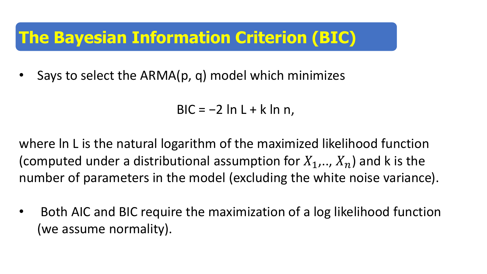
BIC ใช้ \(BIC=-2\ln L+k\ln n\) ส่วนแรกเหมือน AIC ส่วนหลังเปลี่ยนจาก 2k เป็น \(k\ln n\) Both AIC and BIC require the maximization of a log likelihood function โดยสมมติว่าข้อมูลแจกแจงปกติ เมื่อ n มากกว่า \(e^2\approx7.39\) ค่า \(\ln n\) มากกว่า 2 BIC จึงลงโทษพารามิเตอร์หนักกว่า AIC และมักเลือกโมเดลที่เล็กกว่า
\(\ln150=5.0106\) จึงได้ \(BIC=495.3127+4(5.0106)=495.3127+20.0426=515.3553\) ตรงกับช่อง [2,2] ของตาราง BIC
AIC ของ ARMA(2,1) = 501.2778 ลดลงจาก 503.3127 อยู่ 2.0349 การเพิ่มพารามิเตอร์หนึ่งตัวบวก penalty 2 แปลว่า \(-2\ln L\) ลดลง \(2.0349+2=4.0349\)
penalty ของ BIC ต่อพารามิเตอร์คือ 5.0106 จึงเปลี่ยน \(-4.0349+5.0106=+0.9757\) BIC ของ ARMA(2,1) = 515.3553 + 0.9757 = 516.3310 ตรงกับตาราง
พารามิเตอร์ใหม่จะคุ้มใน AIC ถ้าทำให้ \(-2\ln L\) ลดลงเกิน 2 และคุ้มใน BIC ถ้าลดลงเกิน \(\ln n\) ครั้งนี้ลดลง 4.03 จึงคุ้มใน AIC แต่ไม่คุ้มใน BIC
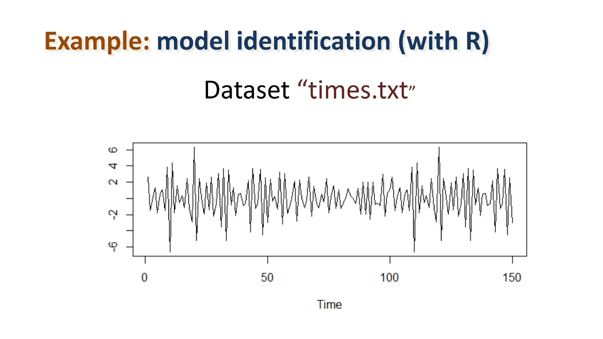
times.txt มีข้อมูล 150 จุด ค่าเฉลี่ย 0.0198 ค่าอยู่ระหว่างประมาณ −6 ถึง 6 กราฟแกว่งรอบศูนย์ตลอด ไม่มี trend และการแกว่งช่วงต้นกับช่วงท้ายกว้างพอกัน จึงไม่ต้องแปลงข้อมูลและไม่ต้อง diff ผล ADF ในหัวข้อ 7 (p-value ≤ 0.01) ยืนยันว่าข้อมูลนิ่ง ลักษณะที่เห็นชัดคือค่าสลับขึ้นลงเกือบทุกจุด ซึ่งเป็นสัญญาณของสหสัมพันธ์เชิงลบที่ lag 1
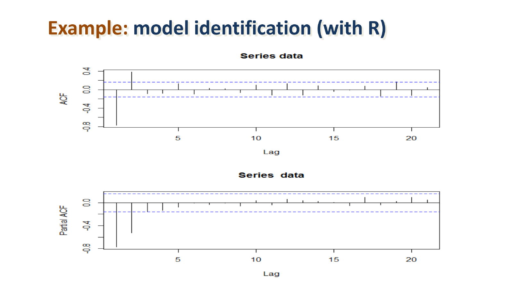
ค่าจริงจาก R: ACF lag 1 ถึง 5 คือ −0.771, 0.382, −0.090, −0.077, 0.129 และ PACF lag 1 ถึง 5 คือ −0.771, −0.524, −0.153, −0.135, −0.079 เส้นขอบคือ \(2/\sqrt{150}=0.163\) ACF เกินขอบที่ lag 1 และ 2 จึงอาจเป็น MA(2) PACF เกินขอบที่ lag 1 และ 2 ส่วน lag 3 = −0.153 อยู่ในขอบพอดี จึงอาจเป็น AR(2) อาจารย์อ่านกราฟนี้ว่า "ไม่เคลียร์ เพราะนี่ก็ data จริง" แล้วตั้ง candidate model ไว้ว่า p เป็น 1 หรือ 2 และ q เป็น 1 หรือ 2 (Class 7-1, 37:22–38:11) ACF ที่สลับเครื่องหมาย −0.771 แล้ว +0.382 สอดคล้องกับส่วน AR ที่ φ ติดลบ: ถ้าเป็น AR(1) ที่ φ = −0.771 ค่าที่ lag 2 จะเป็น \((-0.771)^2=0.594\) แต่ค่าจริงคือ 0.382 ซึ่งต่ำกว่า จึงน่าจะมีส่วนอื่นผสม
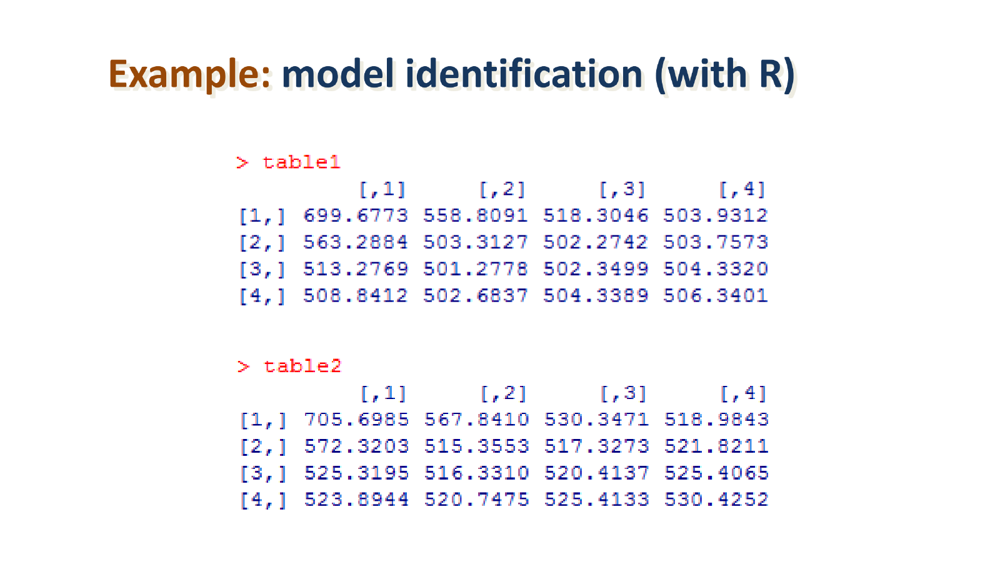
ตารางสร้างด้วยลูปซ้อนในหัวข้อ 15 ช่อง [i, j] คือโมเดล ARMA(i − 1, j − 1) อาจารย์ย้ำว่า "แถวคือ p คอลัมน์คือ q" (Class 7-1, 41:34) ช่อง [1,1] คือ ARMA(0,0) หรือ white noise ซึ่งมี AIC = 699.68 สูงที่สุด แปลว่าข้อมูลมีโครงสร้างแน่นอน ช่อง [3,2] คือ p = 2, q = 1
| อันดับ | AIC | โมเดล | BIC | โมเดล |
|---|---|---|---|---|
| 1 | 501.2778 [3,2] | ARMA(2,1) | 515.3553 [2,2] | ARMA(1,1) |
| 2 | 502.2742 [2,3] | ARMA(1,2) | 516.3310 [3,2] | ARMA(2,1) |
| 3 | 502.3499 [3,3] | ARMA(2,2) | 517.3273 [2,3] | ARMA(1,2) |
อาจารย์เลือก AIC สามตัวต่ำสุดคือ ARMA(2,1), ARMA(1,2), ARMA(2,2) แล้วดู BIC พบว่า ARMA(2,1) และ ARMA(1,2) "overlap" กับ AIC ส่วน ARMA(1,1) ต่ำสุดใน BIC แต่ AIC ไม่เลือก (Class 7-1, 43:29–45:23) ผลคือมี candidate จากทั้งสองเกณฑ์รวมสี่ตัว แล้วไปตัดสินด้วยการตรวจโมเดลและผลพยากรณ์ อาจารย์บอกว่า "เวลาวิเคราะห์อนุกรมเวลา เราไม่ได้มีโมเดลชัว ๆ แบบเห็นปุ๊บตอบปั๊บ เราจะมีโมเดลอยู่ประมาณ 2–3 โมเดลในใจ" (Class 7-1, 38:17) ในไฟล์ R_codes อาจารย์เลือก fit ARMA(1,1) ซึ่งเป็นตัวที่ BIC เลือกและมีพารามิเตอร์น้อยที่สุดในกลุ่ม ความต่างของ AIC ระหว่าง ARMA(1,1) กับ ARMA(2,1) มีเพียง 2.03 จึงถือว่าใกล้กัน
คอลัมน์ 1 คือ q = 0: AR(1) 563.29, AR(2) 513.28, AR(3) 508.84 ทั้งหมดสูงกว่า ARMA(2,1) ที่ 501.28 การเพิ่ม MA หนึ่งตัวช่วยมาก
แถว 1 คือ p = 0: MA(1) 558.81, MA(2) 518.30, MA(3) 503.93 ต้องใช้ถึง MA(3) จึงใกล้ ARMA ที่มีพารามิเตอร์น้อยกว่า
ARMA(3,3) มี AIC 506.34 สูงกว่า ARMA(2,1) แปลว่าพารามิเตอร์ที่เพิ่มไม่คุ้ม penalty
สไลด์สี่หน้าต่อจากนี้รวบรวมขั้นตอนของ the ARIMA model selection phase เปรียบเหมือนการวินิจฉัยของแพทย์ ขั้นที่ 1 ดูอาการภายนอก ขั้นที่ 2 ตรวจว่าป่วยเรื้อรังไหม ขั้นที่ 3 ตรวจละเอียดเพื่อระบุโรค แล้วจึงได้รายชื่อโรคที่เป็นไปได้สองสามโรคไปตรวจยืนยัน
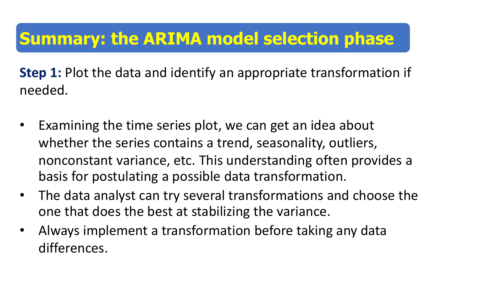
ขั้นแรกคือ Plot the data and identify an appropriate transformation if needed. จากกราฟดูได้ว่ามี trend, seasonality, outlier หรือ nonconstant variance หรือไม่ ผู้วิเคราะห์อาจลองหลายการแปลงแล้วเลือกตัวที่ทำให้การแกว่งคงที่ที่สุด และต้อง Always implement a transformation before taking any data differences. ตัวอย่าง electricity ในหัวข้อ 4: กราฟแสดงการแกว่งที่กว้างขึ้นจากราว 40,000 เป็นราว 110,000 จึง take log ก่อน ส่วน times.txt แกว่งกว้างเท่าเดิมตลอด จึงข้ามขั้นนี้ อาจารย์เรียกขั้นนี้ว่า EDA หรือ Exploratory Data Analysis (Class 7-1, 45:50)
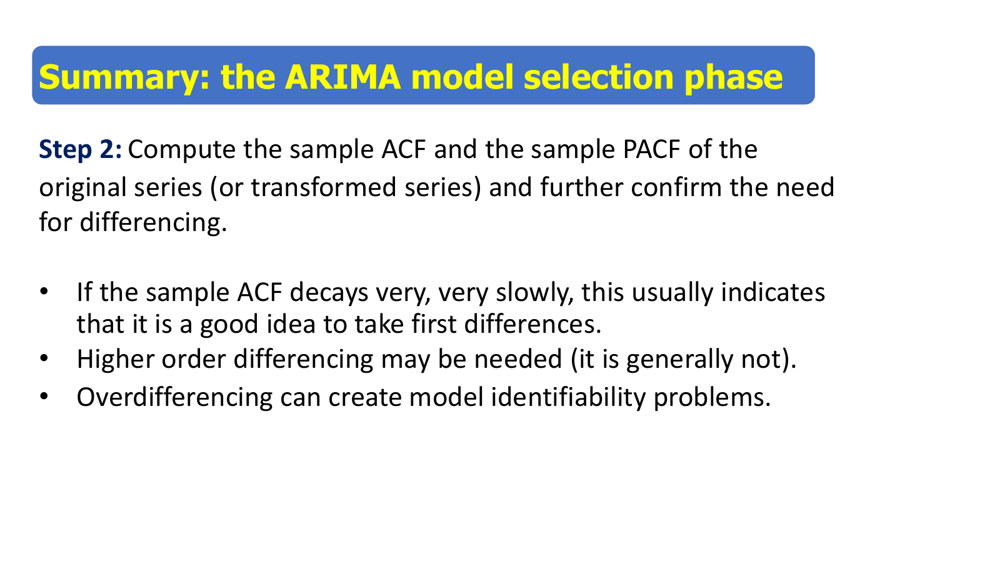
ขั้นที่สองคำนวณ ACF และ PACF ของข้อมูลเดิมหรือข้อมูลที่แปลงแล้ว and further confirm the need for differencing. ถ้า ACF ลดลงช้ามาก ควรทำผลต่างครั้งที่หนึ่ง การทำผลต่างมากกว่านั้นจำเป็นน้อยครั้ง และ Overdifferencing can create model identifiability problems. ตามตัวอย่างในหัวข้อ 6 ที่ white noise ที่ถูก diff กลายเป็น MA(1) ที่ θ = −1 ตัวอย่าง IMA(1,1) ในหัวข้อ 0: ACF ที่ lag 10 ยังเป็น 0.537 จึง diff ครั้งที่หนึ่ง แล้ว ACF เหลือ −0.376 ที่ lag 1 และเข้าขอบที่ lag 2 จึงหยุดที่ d = 1
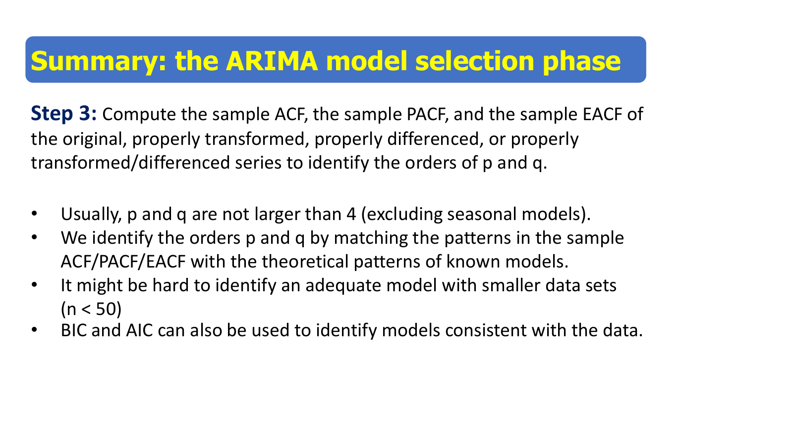
ขั้นที่สามคำนวณ ACF, PACF และ EACF ของข้อมูลที่แปลงและ diff อย่างเหมาะสมแล้ว เพื่อระบุ p และ q โดยการ matching the patterns in the sample ACF/PACF/EACF with the theoretical patterns of known models. ตามตารางในหัวข้อ 5 สไลด์ให้ข้อสังเกตสามข้อ ข้อแรก p และ q มักไม่เกิน 4 ถ้าไม่นับโมเดล seasonal ตาราง AIC/BIC ในไฟล์ R_codes จึงใช้ 0 ถึง 3 ข้อสอง ถ้าข้อมูลน้อยกว่า 50 จุด ระบุโมเดลได้ยาก เพราะเส้นขอบ \(2/\sqrt{n}\) กว้าง เช่น n = 40 ได้ขอบ 0.316 ค่า ACF ขนาด 0.3 จึงยังแยกจากศูนย์ไม่ได้ ข้อสาม BIC และ AIC ใช้ช่วยระบุโมเดลได้ อาจารย์บอกว่าใช้ "โครงคู่" กับกราฟ (Class 7-1, 46:40)
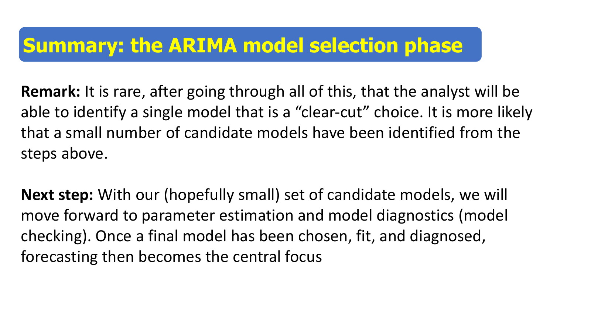
สไลด์ยอมรับว่า It is rare, after going through all of this, that the analyst will be able to identify a single model that is a “clear-cut” choice. ผลที่ได้มักเป็นกลุ่ม candidate model เล็ก ๆ ขั้นถัดไปคือ parameter estimation และ model diagnostics เมื่อเลือกโมเดลสุดท้าย fit และตรวจแล้ว จึงไปสู่การพยากรณ์ อาจารย์เสริมว่าควรเทียบกับโมเดลประเภทอื่นด้วย "เพราะเราต้องการตัวที่ดีที่สุด" (Class 7-1, 47:14) ตัวอย่าง times.txt จบขั้นนี้ด้วย candidate สี่ตัวคือ ARMA(1,1), ARMA(2,1), ARMA(1,2), ARMA(2,2)
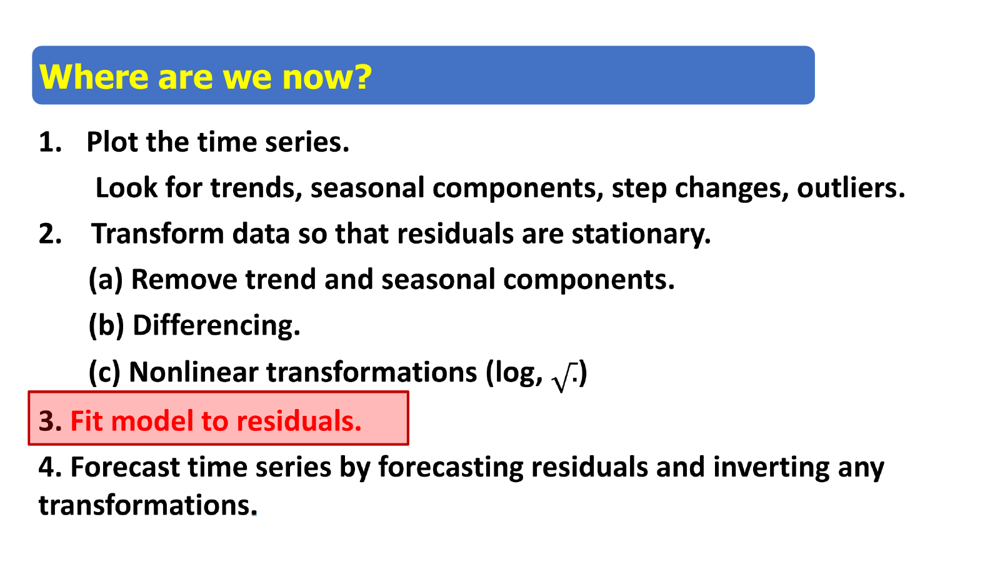
หน้านี้ทวนขั้นตอนทั้งหมดของการวิเคราะห์อนุกรมเวลา: 1. plot ข้อมูลและหา trend, seasonal, step change, outlier 2. แปลงข้อมูลให้ residual นิ่ง ด้วยการกำจัด trend และ seasonal, differencing หรือ nonlinear transformation เช่น log และ \(\sqrt{\cdot}\) 3. Fit model to residuals. 4. พยากรณ์ residual แล้วแปลงกลับทุกขั้นที่ทำไป ขั้นที่ไฮไลต์คือขั้นที่ 3 ซึ่งเป็นเรื่องของส่วนนี้ ตัวอย่างการแปลงกลับ: ถ้าโมเดลทำกับ \(\nabla\log X_t\) และพยากรณ์ได้ \(\widehat{\nabla\log X}_{t+1}=0.02\) ขณะที่ \(X_t=300{,}000\) จะได้ \(\log\hat X_{t+1}=\log 300{,}000+0.02=12.6115+0.02=12.6315\) แปลงกลับด้วย exponential ได้ \(\hat X_{t+1}=e^{12.6315}\approx306{,}061\) หรือเพิ่มขึ้นราว 2%
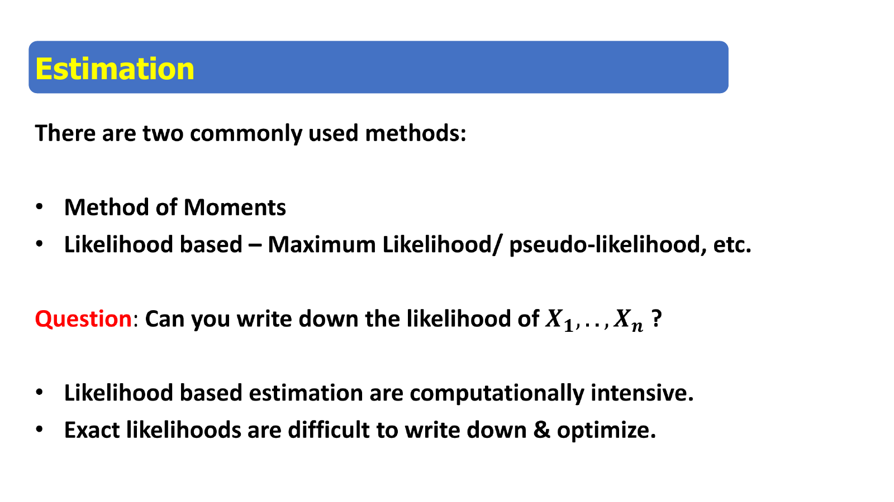
เมื่อได้ p, d, q แล้ว ต้องประมาณค่าพารามิเตอร์ \(\phi,\theta,\sigma^2\) มีสองวิธีที่ใช้กันมาก คือ Method of Moments และวิธีที่อิง likelihood เช่น maximum likelihood หรือ pseudo-likelihood สไลด์ตั้ง Question: เขียน likelihood ของ \(X_1,\dots,X_n\) ได้ไหม ปัญหาคือข้อมูลอนุกรมเวลาไม่อิสระต่อกัน likelihood จึงไม่ใช่ผลคูณของความหนาแน่นแต่ละจุดเหมือนข้อมูลทั่วไป ต้องใช้ความหนาแน่นร่วมของทั้งชุด ซึ่งมีเมทริกซ์ความแปรปรวนร่วมขนาด n × n วิธีที่อิง likelihood จึง computationally intensive และ Exact likelihoods are difficult to write down & optimize.
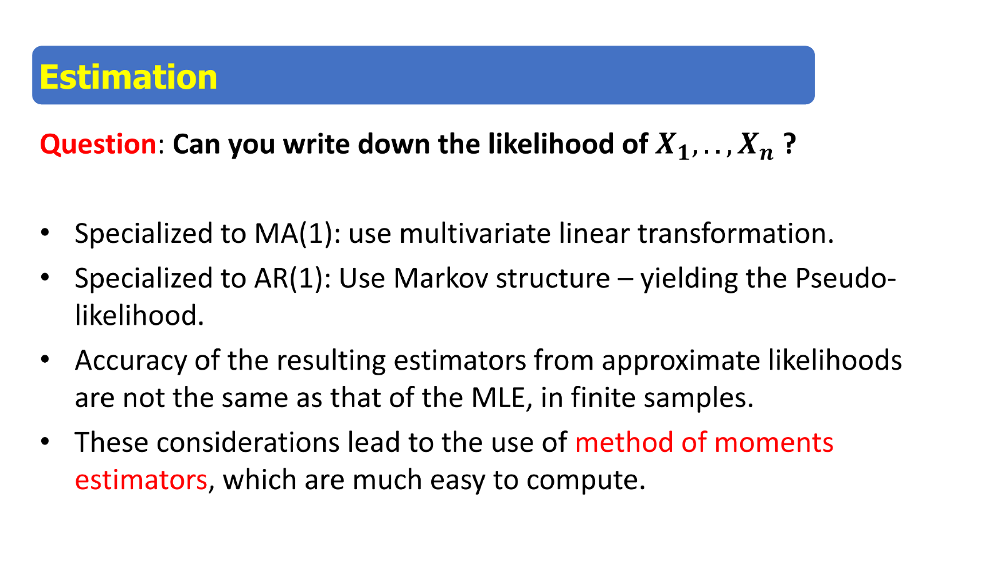
สไลด์ตอบคำถามแยกตามโมเดล สำหรับ MA(1) ใช้ multivariate linear transformation คือเขียนเวกเตอร์ข้อมูลเป็นเมทริกซ์คูณเวกเตอร์ white noise แล้วใช้สมบัติว่าการแปลงเชิงเส้นของตัวแปรปกติยังเป็นปกติ สำหรับ AR(1) ใช้ Markov structure คือ \(X_t\) ขึ้นกับอดีตผ่าน \(X_{t-1}\) ตัวเดียว likelihood จึงแยกเป็นผลคูณของความหนาแน่นแบบมีเงื่อนไขได้ ถ้าตัดพจน์ของ \(X_1\) ทิ้งจะได้ pseudo-likelihood ข้อเสียคือ Accuracy of the resulting estimators from approximate likelihoods are not the same as that of the MLE, in finite samples. เหตุผลเหล่านี้ทำให้หันไปใช้ method of moments estimators ซึ่งคำนวณง่ายกว่ามาก
\(f(x_1,x_2,\dots,x_n)=f(x_1)\,f(x_2\mid x_1)\,f(x_3\mid x_2)\cdots f(x_n\mid x_{n-1})\) ใช้ได้เพราะ AR(1) ขึ้นกับอดีตผ่านค่าก่อนหน้าค่าเดียว
เมื่อรู้ \(x_{t-1}\) แล้ว \(X_t=\phi x_{t-1}+w_t\) จึงแจกแจง \(N(\phi x_{t-1},\sigma^2)\) ส่วน \(X_1\) แจกแจง \(N(0,\sigma^2/(1-\phi^2))\)
ตัด \(f(x_1)\) ทิ้ง: \(\ln L_c=-\frac{n-1}{2}\ln(2\pi\sigma^2)-\frac{1}{2\sigma^2}\sum_{t=2}^{n}(x_t-\phi x_{t-1})^2\) การทำให้ค่านี้สูงสุดเท่ากับทำให้ผลรวมกำลังสองของ residual ต่ำสุด
\(x=(1.0,\ 0.5,\ -0.2)\) และ \(\sigma^2=1\) ลอง φ = 0.5: residual คือ \(0.5-0.5(1)=0\) และ \(-0.2-0.5(0.5)=-0.45\) ผลรวมกำลังสอง 0.2025 ได้ \(\ln L_c=-\ln(2\pi)-0.2025/2=-1.8379-0.1013=-1.9391\)
residual คือ 0.2 และ −0.35 ผลรวมกำลังสอง 0.1625 ได้ \(\ln L_c=-1.9191\) สูงกว่า φ = 0.5
อนุพันธ์เทียบ φ เป็นศูนย์เมื่อ \(\hat\phi=\dfrac{\sum x_tx_{t-1}}{\sum x_{t-1}^2}=\dfrac{(0.5)(1)+(-0.2)(0.5)}{1^2+0.5^2}=\dfrac{0.4}{1.25}=0.32\) ซึ่งให้ \(\ln L_c=-1.9189\) สูงที่สุด
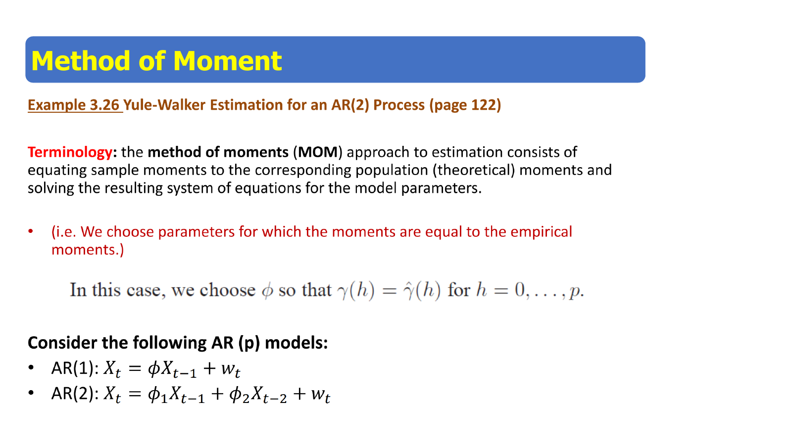
สไลด์อ้าง Example 3.26 Yule-Walker Estimation for an AR(2) Process หน้า 122 Terminology: method of moments (MOM) คือการตั้งค่า moment ของตัวอย่างให้เท่ากับ moment ทางทฤษฎี แล้วแก้สมการหาพารามิเตอร์ (i.e. We choose parameters for which the moments are equal to the empirical moments.) ใน AR(p) คือเลือก φ ที่ทำให้ \(\gamma(h)=\hat\gamma(h)\) สำหรับ \(h=0,\dots,p\) เปรียบเหมือนการเดาสูตรอาหารจากการชิม ถ้ารสเค็มและรสหวานของสูตรที่เดาตรงกับอาหารที่ชิม ก็ใช้สูตรนั้น moment คือ "รส" ที่วัดได้จากข้อมูล
AR(1) \(X_t=\phi X_{t-1}+w_t\) มี \(\rho(1)=\phi\) และ \(\gamma(0)=\sigma^2/(1-\phi^2)\) จึงได้ \(\sigma^2=\gamma(0)(1-\phi^2)\)
R ให้ \(\hat\gamma(0)=6.0495\) และ \(\hat\gamma(1)=-4.6641\) จึงได้ \(\hat\rho(1)=-4.6641/6.0495=-0.7710\)
\(\hat\phi=\hat\rho(1)=-0.7710\)
\(\hat\sigma^2=6.0495\,(1-0.7710^2)=6.0495\,(1-0.5944)=6.0495(0.4056)=2.4535\)
ar.yw(data, order=1) ให้ ar = −0.7710 ตรงกัน ส่วน var.pred = 2.4866 ซึ่งเท่ากับ \(2.4535\times150/148\) เพราะ R ปรับด้วยตัวคูณ \(n/(n-p-1)\)
สไลด์ยกโมเดลสองตัวที่จะใช้คือ AR(1): \(X_t=\phi X_{t-1}+w_t\) และ AR(2): \(X_t=\phi_1X_{t-1}+\phi_2X_{t-2}+w_t\) ตัวอย่าง AR(2) อยู่ในหน้าถัดไป
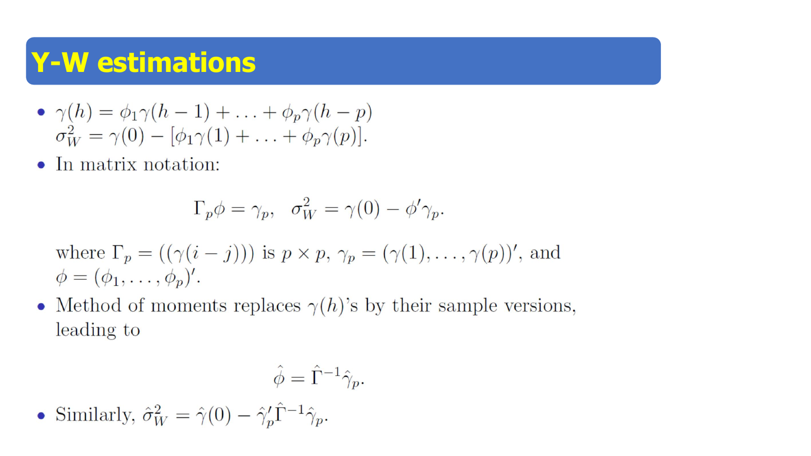
Yule-Walker equations มาจากการคูณ AR(p) ด้วย \(X_{t-h}\) แล้วหาค่าคาดหมาย ได้ \(\gamma(h)=\phi_1\gamma(h-1)+\dots+\phi_p\gamma(h-p)\) สำหรับ h = 1, …, p และเมื่อ h = 0 ได้ \(\sigma_W^2=\gamma(0)-[\phi_1\gamma(1)+\dots+\phi_p\gamma(p)]\) เขียนเป็นเมทริกซ์ได้ \(\Gamma_p\phi=\gamma_p\) โดย \(\Gamma_p\) คือเมทริกซ์ p × p ที่ช่อง (i, j) เป็น \(\gamma(i-j)\), \(\gamma_p=(\gamma(1),\dots,\gamma(p))'\) และ \(\phi=(\phi_1,\dots,\phi_p)'\) Method of moments แทน γ ด้วยค่าจากข้อมูล จึงได้ \(\hat\phi=\hat\Gamma^{-1}\hat\gamma_p\) และ \(\hat\sigma_W^2=\hat\gamma(0)-\hat\gamma_p'\hat\Gamma^{-1}\hat\gamma_p\)
\(\hat\rho(1)=-0.7710\), \(\hat\rho(2)=0.3819\), \(\hat\gamma(0)=6.0495\) หารสมการทั้งระบบด้วย \(\gamma(0)\) จะใช้ ρ แทน γ ได้
\(\begin{pmatrix}1&\rho_1\\\rho_1&1\end{pmatrix}\begin{pmatrix}\phi_1\\\phi_2\end{pmatrix}=\begin{pmatrix}\rho_1\\\rho_2\end{pmatrix}\) คือ \(\phi_1+\rho_1\phi_2=\rho_1\) และ \(\rho_1\phi_1+\phi_2=\rho_2\)
\(1-\rho_1^2=1-0.5944=0.4056\)
\(\hat\phi_1=\dfrac{\rho_1(1-\rho_2)}{1-\rho_1^2}=\dfrac{-0.7710(0.6181)}{0.4056}=\dfrac{-0.4766}{0.4056}=-1.1751\)
\(\hat\phi_2=\dfrac{\rho_2-\rho_1^2}{1-\rho_1^2}=\dfrac{0.3819-0.5944}{0.4056}=\dfrac{-0.2125}{0.4056}=-0.5240\)
\(\hat\sigma^2=\hat\gamma(0)\,[1-\hat\phi_1\hat\rho_1-\hat\phi_2\hat\rho_2]=6.0495\,[1-0.9060+0.2002]=6.0495(0.2942)=1.7797\) R ปรับด้วย 150/147 ได้ 1.8157
\(\phi_1+\phi_2=-1.699<1\), \(\phi_2-\phi_1=0.651<1\), \(|\phi_2|=0.524<1\) ผ่านทั้งสามข้อ Yule-Walker ของ AR ให้โมเดลที่ stationary เสมอ
ar.yw(data, order=2, aic=FALSE) ให้ −1.1751, −0.5242, 1.8157)สังเกตว่า \(\hat\phi_2=-0.524\) เท่ากับ PACF ที่ lag 2 ของ times.txt พอดี เพราะ PACF ที่ lag k นิยามว่าเป็นสัมประสิทธิ์ตัวสุดท้ายของ AR(k) ที่ fit ด้วย Yule-Walker (Lesson 6 หัวข้อ 7)
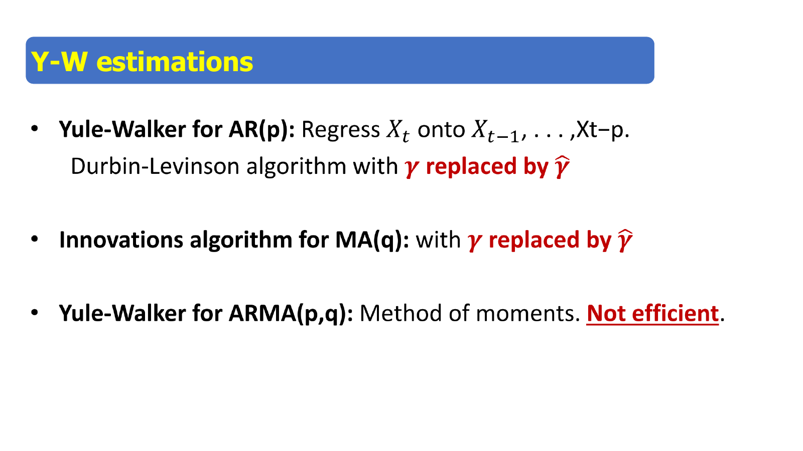
สไลด์สรุปสามกรณี Yule-Walker สำหรับ AR(p) คือ regress \(X_t\) บน \(X_{t-1},\dots,X_{t-p}\) คำนวณด้วย Durbin-Levinson algorithm γ replaced by \(\hat\gamma\) ซึ่งทำงานดี สำหรับ MA(q) ใช้ Innovations algorithm โดยแทน γ ด้วย \(\hat\gamma\) เช่นกัน ส่วน Yule-Walker สำหรับ ARMA(p,q) เป็น method of moments ที่ Not efficient คือได้ค่าประมาณที่แปรปรวนสูงกว่าวิธีอื่น เหตุผลที่ MOM ไม่ดีกับส่วน MA แสดงได้ด้วย MA(1): \(\rho(1)=\theta/(1+\theta^2)\) ถ้าข้อมูลให้ \(\hat\rho(1)=0.4\) ต้องแก้ \(0.4\theta^2-\theta+0.4=0\) ได้ \(\theta=(1\pm\sqrt{1-0.64})/0.8=(1\pm0.6)/0.8\) คือ 2 หรือ 0.5 เลือกตัวที่ invertible คือ 0.5 แต่ถ้า \(\hat\rho(1)=0.6\) ค่าใต้ราก \(1-4(0.36)=-0.44\) ติดลบ ไม่มีคำตอบจริงเลย เพราะ MA(1) มี \(|\rho(1)|\le0.5\) เสมอ MOM จึงอาจล้มเหลวเมื่อค่าจากข้อมูลคลาดเคลื่อน
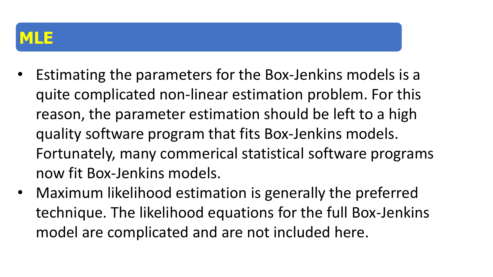
การประมาณพารามิเตอร์ของ Box-Jenkins เป็น quite complicated non-linear estimation problem จึงควรให้ซอฟต์แวร์คุณภาพดีทำ Maximum likelihood estimation is generally the preferred technique. สมการ likelihood ของโมเดลเต็มซับซ้อนจนสไลด์ไม่ได้แสดง คำว่า non-linear มาจากส่วน MA: ใน AR(1) residual \(x_t-\phi x_{t-1}\) เป็นเส้นตรงใน φ แต่ใน MA(1) residual ต้องคำนวณย้อนกลับ \(w_t=x_t-\theta w_{t-1}=x_t-\theta x_{t-1}+\theta^2x_{t-2}-\dots\) ซึ่งเป็นพหุนามกำลังสูงของ θ จึงหาคำตอบด้วยสูตรปิดไม่ได้
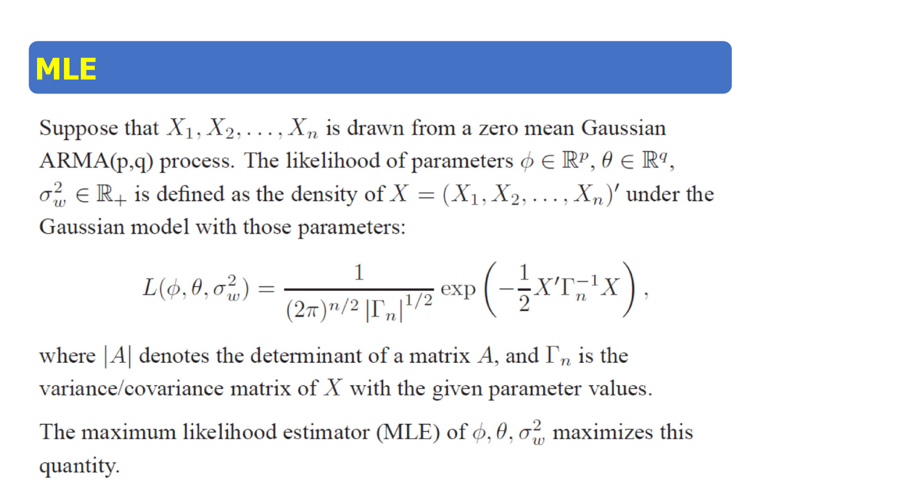
ถ้า \(X_1,\dots,X_n\) มาจาก Gaussian ARMA(p,q) ที่ค่าเฉลี่ยเป็นศูนย์ likelihood ของ \(\phi,\theta,\sigma_w^2\) คือความหนาแน่นของเวกเตอร์ \(X=(X_1,\dots,X_n)'\): \(L(\phi,\theta,\sigma_w^2)=\dfrac{1}{(2\pi)^{n/2}|\Gamma_n|^{1/2}}\exp\left(-\tfrac12X'\Gamma_n^{-1}X\right)\) โดย \(|\Gamma_n|\) คือดีเทอร์มิแนนต์ของเมทริกซ์ความแปรปรวนร่วม \(\Gamma_n\) ซึ่งช่อง (i, j) คือ \(\gamma(i-j)\) ที่คำนวณจากพารามิเตอร์ MLE คือค่าที่ทำให้ L สูงสุด สูตรนี้คือสูตรความหนาแน่นของการแจกแจงปกติหลายตัวแปร ซึ่งเมื่อ n = 1 จะกลับเป็น \(\frac{1}{\sqrt{2\pi\sigma^2}}e^{-x^2/2\sigma^2}\) ที่คุ้นเคย
\(\gamma(0)=\sigma^2(1+\theta^2)\), \(\gamma(1)=\sigma^2\theta\) จึงได้ \(\Gamma_2=\begin{pmatrix}1+\theta^2&\theta\\\theta&1+\theta^2\end{pmatrix}\)
\(\Gamma_2=\begin{pmatrix}1.25&0.5\\0.5&1.25\end{pmatrix}\), \(|\Gamma_2|=1.5625-0.25=1.3125\)
\(\Gamma_2^{-1}=\frac{1}{1.3125}\begin{pmatrix}1.25&-0.5\\-0.5&1.25\end{pmatrix}\) แล้ว \(X'\Gamma_2^{-1}X=\frac{1.25+1.25+2(-0.5)(1)(-1)}{1.3125}=\frac{3.5}{1.3125}=2.6667\)
\(L=\dfrac{e^{-2.6667/2}}{2\pi\sqrt{1.3125}}=\dfrac{0.2636}{6.2832(1.1456)}=0.0366\)
ดีเทอร์มิแนนต์เท่าเดิม แต่ \(X'\Gamma_2^{-1}X=\frac{2.5-1}{1.3125}=1.1429\) ได้ \(L=0.0785\) สูงกว่าเท่าตัว
เมื่อ n = 150 เมทริกซ์ \(\Gamma_n\) มีขนาด 150 × 150 การหาค่าผกผันและดีเทอร์มิแนนต์ทุกครั้งที่ลอง θ ใหม่ใช้การคำนวณมาก นี่คือความหมายของ computationally intensive ในสไลด์หน้า 30
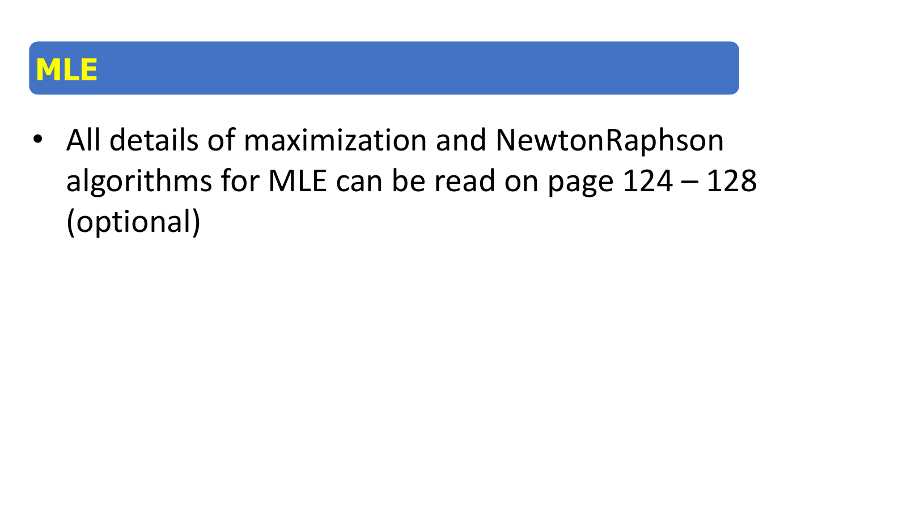
รายละเอียดการหาค่าสูงสุดด้วย Newton-Raphson อยู่ในตำราหน้า 124–128 สไลด์ระบุว่า (optional) แนวคิดคือเริ่มจากค่าเริ่มต้น \(\beta_0\) แล้วปรับด้วย \(\beta_{k+1}=\beta_k-\ell'(\beta_k)/\ell''(\beta_k)\) โดย ℓ คือ log-likelihood ตัวอย่างกับข้อมูล AR(1) สามจุดในหัวข้อ 11: \(\ell(\phi)=c-\frac12\sum(x_t-\phi x_{t-1})^2\) มี \(\ell'(\phi)=\sum x_{t-1}(x_t-\phi x_{t-1})=0.4-1.25\phi\) และ \(\ell''(\phi)=-1.25\) เริ่มที่ \(\phi_0=0\) ได้ \(\phi_1=0-\frac{0.4}{-1.25}=0.32\) ถึงคำตอบในก้าวเดียวเพราะ ℓ เป็นพาราโบลา กับโมเดลที่มี MA ต้องวนหลายรอบ เปรียบเหมือนการเดินขึ้นเขาในหมอก ดูความชันและความโค้งตรงที่ยืนแล้วก้าวไปทางที่สูงขึ้น ทำซ้ำจนถึงยอด
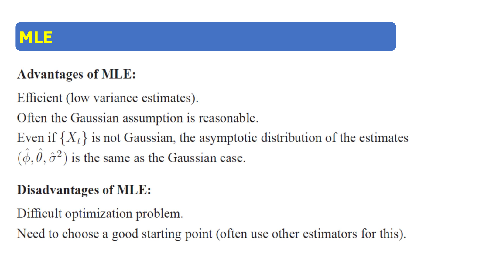
ข้อดีของ MLE: Efficient (low variance estimates). สมมติฐาน Gaussian มักสมเหตุสมผล และแม้ \(\{X_t\}\) ไม่ใช่ Gaussian การแจกแจงเชิงเส้นกำกับของค่าประมาณ \((\hat\phi,\hat\theta,\hat\sigma^2)\) ก็เหมือนกรณี Gaussian ข้อเสีย: Difficult optimization problem. และต้องเลือกจุดเริ่มต้นที่ดี ซึ่งมักใช้ค่าจากวิธีอื่น เช่น Yule-Walker หรือ conditional sum of squares ฟังก์ชัน arima() ใน R ค่าเริ่มต้นคือ method = "CSS-ML" ใช้ CSS หาจุดเริ่มก่อนแล้วทำ ML ต่อ ถ้าระบุ method = "ML" แบบในสไลด์ จะทำ ML อย่างเดียว ตัวอย่างความต่างของประสิทธิภาพกับ times.txt: MLE ของ ARMA(1,1) ได้ s.e. ของ ar1 เป็น 0.0686 ส่วน Yule-Walker ใช้กับ ARMA ไม่ได้โดยตรงและถูกระบุว่า not efficient
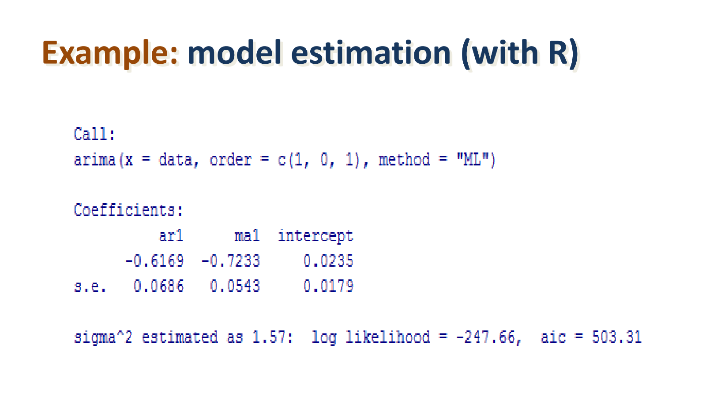
ผลของ arima(x = data, order = c(1, 0, 1), method = "ML") กับ times.txt: ar1 = −0.6169 (s.e. 0.0686), ma1 = −0.7233 (s.e. 0.0543), intercept = 0.0235 (s.e. 0.0179), sigma^2 = 1.57, log likelihood = −247.66 และ aic = 503.31 คำว่า intercept ใน arima() คือค่าเฉลี่ย μ ของ series ไม่ใช่ค่าคงที่ในสมการ R เขียนโมเดลเป็น \((X_t-\mu)=\phi(X_{t-1}-\mu)+w_t+\theta w_{t-1}\)
\(X_t-0.0235=-0.6169(X_{t-1}-0.0235)+w_t-0.7233\,w_{t-1}\), \(w_t\sim N(0,1.57)\) ถ้าย้ายข้าง ค่าคงที่คือ \(\mu(1-\phi)=0.0235(1.6169)=0.0380\)
ar1: \(-0.6169/0.0686=-8.99\) ma1: \(-0.7233/0.0543=-13.32\) ทั้งสอง \(|t|>2\) จึงมีนัยสำคัญ intercept: \(0.0235/0.0179=1.31\) น้อยกว่า 2 ไม่มีนัยสำคัญ ค่าเฉลี่ยอาจเป็นศูนย์
\(-0.6169\pm1.96(0.0686)=-0.6169\pm0.1345\) คือ \((-0.7514,\ -0.4824)\) ไม่คลุมศูนย์
\(|\phi|=0.6169<1\) จึง causal และ \(|\theta|=0.7233<1\) จึง invertible ถ้าเขียนแบบอาจารย์ใน Class 7-2 ที่ใช้ \(w_t-\theta w_{t-1}\) ค่า θ จะเป็น +0.7233
\(-2(-247.6564)+2(4)=503.31\) ตรงกับผล (หัวข้อ 8)
ข้อมูลสุดท้าย \(X_{150}=-2.9693\) residual สุดท้าย \(\hat w_{150}=-1.9058\) อนาคต \(w_{151}\) มีค่าคาดหมายศูนย์ จึงได้ \(\hat X_{151}=0.0235+(-0.6169)(-2.9693-0.0235)+(-0.7233)(-1.9058)=0.0235+1.8463+1.3785=3.2483\) R ให้ 3.2480
ไม่มี residual ที่รู้แล้ว ใช้เฉพาะส่วน AR: \(\hat X_{152}=0.0235+(-0.6169)(3.2483-0.0235)=0.0235-1.9893=-1.9658\) R ให้ −1.9656
หนึ่งก้าว: \(\sqrt{1.57}=1.253\) สองก้าว: \(\sigma\sqrt{1+\psi_1^2}\) โดย \(\psi_1=\phi+\theta=-1.3402\) ได้ \(1.253\sqrt{2.7961}=2.095\) ตรงกับ R ที่ 1.2530 และ 2.0952
หลังประมาณค่าแล้ว ไฟล์ R_codes ตรวจโมเดล (model validation) สองด้าน ด้านแรก residual ควรแจกแจงปกติ ด้านที่สอง residual ไม่ควรมีสหสัมพันธ์เหลืออยู่ เหมือนการตรวจว่ากากกาแฟที่กรองแล้วไม่มีผงกาแฟหลุดออกมา ถ้า residual ยังมีรูปแบบ แปลว่าโมเดลยังดึงโครงสร้างออกไม่หมด อาจารย์บอกว่า "ไม่ว่าคุณจะทำแบบไหน คุณต้องมีการตรวจสอบโมเดลก่อนนำไปใช้" (Class 7-1, 38:37)
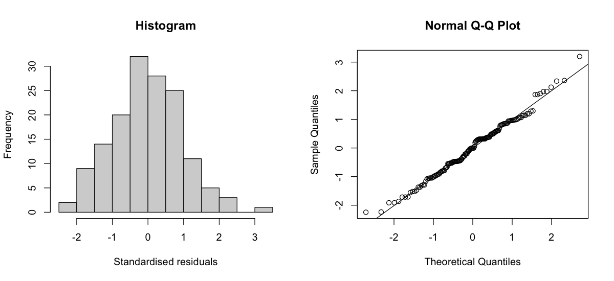
Standardized residual คือ residual หารด้วย \(\hat\sigma=1.253\) มีค่าตั้งแต่ −2.24 ถึง 3.20 มี 6 จาก 150 ตัวที่เกิน ±2 คิดเป็น 4% ใกล้กับ 5% ที่การแจกแจงปกติคาดไว้ histogram มีรูประฆังรอบศูนย์ และจุดใน QQ plot อยู่ใกล้เส้นตรง ยกเว้นปลายขวาที่ค่า 3.20 shapiro.test ให้ W = 0.989 และ p-value = 0.307 มากกว่า 0.05 จึงไม่ reject H0 ที่ว่า residual แจกแจงปกติ (H0 ของ Shapiro-Wilk คือปกติ ตรงข้ามกับ ADF ที่ H0 คือไม่นิ่ง)
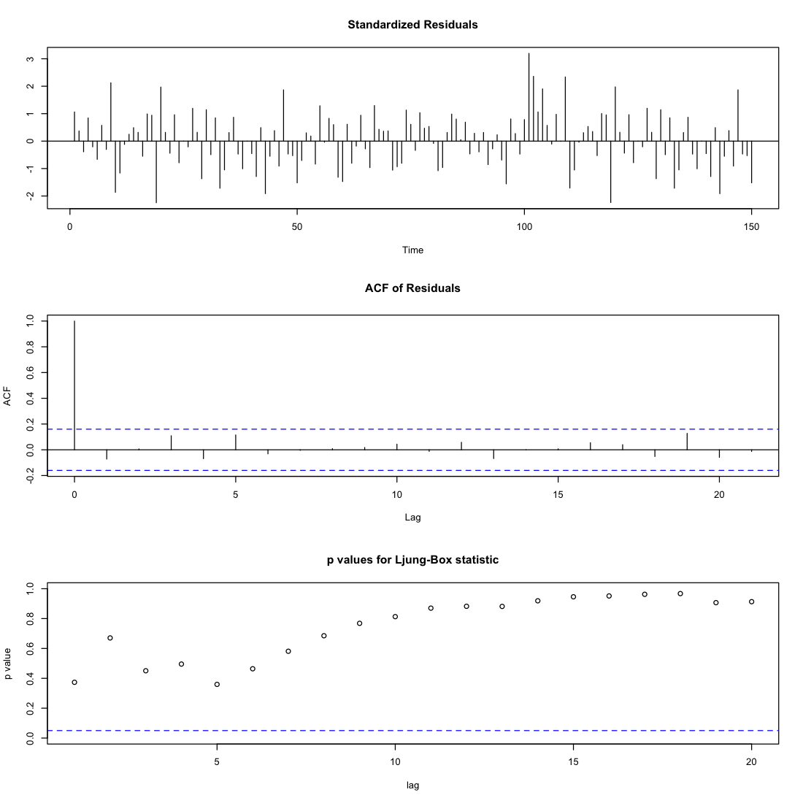
tsdiag(nat, gof.lag=20) (ไม่ใช่สไลด์)tsdiag ให้กราฟสามแผง แผงบนคือ standardized residual ตามเวลา ไม่มี trend และแกว่งกว้างพอกันตลอด แผงกลางคือ ACF ของ residual ค่า lag 1 ถึง 5 คือ −0.072, 0.007, 0.109, −0.069, 0.116 อยู่ในขอบ 0.163 ทั้งหมด แผงล่างคือ p-value ของ Ljung-Box test ที่ lag 1 ถึง 20 ทุกค่าอยู่เหนือเส้น 0.05 (ต่ำสุด 0.359 ที่ lag 5) H0 ของ Ljung-Box คือ residual ไม่มีสหสัมพันธ์ จึงไม่ reject สรุปว่า ARMA(1,1) ดึงโครงสร้างออกได้หมด ถ้าทดสอบแบบหักองศาอิสระตามจำนวนพารามิเตอร์ (Box.test(resid, lag=10, type="Ljung", fitdf=2)) ได้ \(Q=6.03\), df = 8, p-value = 0.644 ข้อสรุปเหมือนเดิม
ส่วน IMA และ electricity อธิบายไว้ในหัวข้อ 0 และ 4 แล้ว หัวข้อนี้อธิบายส่วนที่เหลือของไฟล์ตามลำดับ
data <- read.table("times.txt")
data <- ts(data)
par(mfrow=c(2,1))
acf(data)
pacf(data)
table1 <- array(0,c(4,4))
for (i in 1:4) {
for (j in 1:4) {
aic <- AIC(arima(data, order=c(i-1,0,j-1), method="ML"))
table1[i,j] <- aic
}
}
table2 <- array(0,c(4,4))
for (i in 1:4) {
for (j in 1:4) {
bic <- AIC(arima(data, order=c(i-1,0,j-1), method="ML"), k=log(length(data)))
table2[i,j] <- bic
}
}| โค้ด | ทำอะไร |
|---|---|
| read.table("times.txt"); ts(data) | อ่านไฟล์เป็นตาราง แล้วแปลงเป็น time series 150 จุด |
| par(mfrow=c(2,1)) | แบ่งหน้ากราฟเป็น 2 แถว 1 คอลัมน์ ให้ ACF อยู่บน PACF อยู่ล่าง ได้สไลด์หน้า 22 |
| array(0,c(4,4)) | ตาราง 4 × 4 ที่ทุกช่องเป็นศูนย์ เตรียมไว้ใส่ผล |
| for (i in 1:4) for (j in 1:4) | วนทุกคู่ (i, j) รวม 16 รอบ i เป็นแถว j เป็นคอลัมน์ |
| order=c(i-1,0,j-1) | แถว i ใช้ p = i − 1 คอลัมน์ j ใช้ q = j − 1 ลบ 1 เพราะ R นับแถวจาก 1 แต่ p, q เริ่มจาก 0 |
| AIC(...) | คำนวณ \(-2\ln L+2k\) โดยนับ k รวม intercept และ \(\sigma^2\) |
| AIC(..., k=log(length(data))) | เปลี่ยนค่าปรับต่อพารามิเตอร์จาก 2 เป็น \(\ln n=\ln150=5.0106\) จึงได้ BIC ชื่ออาร์กิวเมนต์ k ตรงนี้คือค่าปรับต่อพารามิเตอร์ ไม่ใช่จำนวนพารามิเตอร์ |
อาจารย์ไล่โค้ดนี้ในคลิปว่า "ตอนเริ่มแรก i เป็น 1 j เป็น 1 แสดงว่ามันคือ ARIMA(0,0,0)" และ "ถ้าคอลัมน์ 3 แสดงว่า q เป็น 2" (Class 7-1, 40:15–41:18) ข้อสอบที่ให้ตารางนี้มาจะถามให้แปลงตำแหน่งช่องเป็นโมเดล ช่อง [4,1] คือ AR(3) และช่อง [1,4] คือ MA(3)
acf(data, plot=F)
nat.yw <- ar.yw(data, order=1)
nat.yw$mean #mean estimate
nat.yw$ar #phi estimate
nat.yw$var.pred #error variance estimate
ar(data, order.max=1, AIC=F, method='yw')> nat.yw$mean [1] 0.01981923 > nat.yw$ar [1] -0.7709978 > nat.yw$var.pred [1] 2.486594
| โค้ด | ทำอะไร |
|---|---|
| acf(data, plot=F) | พิมพ์ค่า ACF เป็นตัวเลขแทนกราฟ ใช้ดู \(\hat\rho(1)=-0.771\), \(\hat\rho(2)=0.382\) |
| ar.yw(data, order=1) | fit AR(1) ด้วย Yule-Walker คอมเมนต์ในไฟล์บอกว่า Y-W ใช้ได้กับ AR(p) และ MA(q) |
| $mean, $ar, $var.pred | ค่าเฉลี่ย 0.0198, \(\hat\phi=-0.7710\), \(\hat\sigma^2=2.4866\) ตามที่คำนวณมือในหัวข้อ 12 |
| ar(..., order.max=1, AIC=F, method='yw') | วิธีที่สองได้ผลเดียวกัน AIC=F สั่งให้ใช้อันดับ 1 ตรง ๆ ไม่ให้เลือกอันดับเองด้วย AIC |
nat <- arima(data, order=c(1,0,1), method='ML')
library(TSA)
par(mfrow=c(1,2))
hist(rstandard(nat), xlab="Standardised residuals")
qqnorm(rstandard(nat)); qqline(rstandard(nat))
shapiro.test(rstandard(nat))
tsdiag(nat, gof.lag=20)| โค้ด | ทำอะไร |
|---|---|
| arima(data, order=c(1,0,1), method='ML') | fit ARMA(1,1) ด้วย maximum likelihood ได้ผลในสไลด์หน้า 39 |
| rstandard(nat) | standardized residual ฟังก์ชันนี้มาจาก TSA สำหรับโมเดล arima ใน base R ใช้ residuals(nat)/sqrt(nat$sigma2) แทน |
| hist, qqnorm, qqline | ตรวจความปกติด้วยกราฟ |
| shapiro.test | ตรวจความปกติด้วยการทดสอบ H0: ปกติ ได้ p-value = 0.307 |
| tsdiag(nat, gof.lag=20) | สามแผง: residual ตามเวลา, ACF ของ residual, p-value ของ Ljung-Box ถึง lag 20 |
data <- read.table("aero.txt"); data <- ts(data)
acf(data); acf(diff(data)); pacf(diff(data))
# ตาราง AIC/BIC ของ diff(data) แบบเดียวกับข้างบน
eacf(diff(data))
fit1 <- arima(diff(data), order=c(2,0,0), method='ML') # ARIMA(2,1,0)
fit2 <- arima(diff(data), order=c(0,0,1), method='ML') # ARIMA(0,1,1)
data <- read.table("temp.txt"); data <- ts(data, start=1856)
dif <- diff(data, 1)
acf(dif); pacf(dif)
nat <- arima(dif, order=c(1,0,1), method='ML')สองตัวอย่างนี้ใช้ขั้นตอนเดียวกับ times.txt แต่ข้อมูลไม่นิ่ง จึงทำผลต่างก่อนทุกขั้น การ fit arima(diff(data), order=c(2,0,0)) เท่ากับ ARIMA(2,1,0) กับข้อมูลเดิม คอมเมนต์ในไฟล์จึงเรียกว่า ARIMA(2,1,0) วิธีที่ตรงกว่าคือ arima(data, order=c(2,1,0)) ซึ่งให้ R ทำผลต่างเองและพยากรณ์กลับเป็นหน่วยเดิมได้ ข้อควรสังเกตสองข้อ ข้อแรก บรรทัด plot(new_temperature, ...) ในส่วน aerosol อ้างตัวแปรที่ไม่มีในไฟล์ ต้องเปลี่ยนเป็น plot(data, ...) ข้อที่สอง BIC ในส่วนนี้ใช้ log(length(data)) ซึ่งเป็นความยาวข้อมูลก่อน diff เกินจริงไปหนึ่งจุด ผลต่างน้อยมาก ไฟล์ aero.txt และ temp.txt ไม่ได้ให้มา บทเรียนนี้จึงอธิบายเฉพาะโค้ด
\(X_{t+1}=X_t+w_{t+1}-\theta w_t\)
\(w_{t+1}=X_{t+1}-\hat X_{t+1}\) แทนลงไป: \(X_{t+1}=X_t+X_{t+1}-\hat X_{t+1}-\theta w_t\) จึงได้ \(\hat X_{t+1}=X_t-\theta w_t\)
\(w_t=X_t-\hat X_t\): \(\hat X_{t+1}=X_t-\theta(X_t-\hat X_t)=(1-\theta)X_t+\theta\hat X_t\)
ให้ \(\alpha=1-\theta\) จะได้ \(\theta=1-\alpha\) และ \(\hat X_{t+1}=\alpha X_t+(1-\alpha)\hat X_t\) ซึ่งเป็น single exponential smoothing
θ = 0.3 ได้ α = 1 − 0.3 = 0.7
ดีเทอร์มิแนนต์ \(1-\rho_1^2=1-0.25=0.75\)
\(\hat\phi_1=\rho_1(1-\rho_2)/(1-\rho_1^2)=0.5(0.9)/0.75=0.6\)
\(\hat\phi_2=(\rho_2-\rho_1^2)/(1-\rho_1^2)=(0.1-0.25)/0.75=-0.2\)
ตรวจ: \(\phi_1+\phi_2=0.4<1\), \(\phi_2-\phi_1=-0.8<1\), \(|\phi_2|=0.2<1\) จึง stationary
ตรวจย้อน: \(\rho_1=\phi_1+\phi_2\rho_1=0.6-0.1=0.5\) และ \(\rho_2=\phi_1\rho_1+\phi_2=0.3-0.2=0.1\) ตรงกับข้อมูล
arima(x, order=c(1,0,0)) ให้ ar1 = 0.45 (s.e. 0.08), intercept = 10.2 (s.e. 0.5), sigma^2 = 2.1, log likelihood = −180.3 จงเขียนสมการโมเดล หา t ของ ar1 หา AIC ตามวิธีของ R และพยากรณ์ \(X_{n+1}\) ถ้า \(X_n=12\)สมการ: \(X_t-10.2=0.45(X_{t-1}-10.2)+w_t\), \(w_t\sim N(0,2.1)\)
t ของ ar1: \(0.45/0.08=5.63\) มากกว่า 2 จึงมีนัยสำคัญ
AIC: พารามิเตอร์คือ ar1, intercept, \(\sigma^2\) รวม k = 3 ได้ \(-2(-180.3)+2(3)=360.6+6=366.6\)
พยากรณ์: \(\hat X_{n+1}=10.2+0.45(12-10.2)=10.2+0.81=11.01\)
1. Plot ข้อมูล เห็นการแกว่งกว้างขึ้น ใช้ BoxCox.ar ถ้าช่วงเชื่อมั่นของ λ คลุม 0 ให้ take log ทำก่อน differencing
2. ดู ACF ของ log ข้อมูล ถ้าลดลงช้ามาก diff ครั้งที่หนึ่ง ถ้า ACF ของผลต่างยังลดลงช้า diff อีกครั้ง (หายาก) ใช้ ADF ยืนยัน: p-value < 0.05 แปลว่านิ่งแล้ว ระวัง overdifferencing ถ้า ACF lag 1 ใกล้ −0.5
3. ดู ACF, PACF, EACF ของ \(\nabla\log X_t\) เทียบกับรูปแบบทฤษฎีเพื่อหา p, q (มักไม่เกิน 4) ใช้ตาราง AIC/BIC ช่วย เลือกค่าต่ำ
4. ได้ candidate สองสามตัว ประมาณค่าด้วย MLE ตรวจ residual (ปกติ, Ljung-Box) แล้วเลือกตัวที่ผ่านและพยากรณ์ดี แปลงผลพยากรณ์กลับด้วย exponential ถ้าข้อมูลรายเดือนยังมี seasonal เหลือ ต้องใช้ SARIMA
AIC A = 400 + 6 = 406.0 AIC B = 396.5 + 8 = 404.5 AIC เลือก B
BIC A = 400 + 3(5.298) = 415.89 BIC B = 396.5 + 4(5.298) = 417.69 BIC เลือก A
พารามิเตอร์ที่เพิ่มทำให้ −2 ln L ลดลง 3.5 ซึ่งมากกว่าค่าปรับ 2 ของ AIC แต่น้อยกว่าค่าปรับ ln 200 = 5.298 ของ BIC
| หน้า | เนื้อหา | สอนที่ |
|---|---|---|
| 1 | ปก ARIMA and Exponential Smoothing | etc — ปก |
| 2–3 | ARIMA(0,1,1) and Exponential equivalence | หัวข้อ 1 |
| 4 | Double Exponential Smoothing | หัวข้อ 2 |
| 5 | หน้าคั่น Transformation | etc — หน้าคั่น |
| 6–8 | Transformation และ Box-Cox | หัวข้อ 3 |
| 9–12 | Data: electricity (TSA) | หัวข้อ 4 |
| 13 | หน้าคั่น Model Identification | etc — หน้าคั่น |
| 14 | ACF/PACF/EACF | หัวข้อ 5 |
| 15–16 | Sign of Nonstationary | หัวข้อ 6 |
| 17 | Nonstationary Checking Tool (adf.test) | หัวข้อ 7 |
| 18–20 | AIC และ BIC | หัวข้อ 8 |
| 21–23 | Example: model identification (times.txt) | หัวข้อ 9 |
| 24–27 | Summary: the ARIMA model selection phase | หัวข้อ 10 |
| 28 | หน้าคั่น Estimation | etc — หน้าคั่น |
| 29–31 | Where are we now? และ Estimation | หัวข้อ 11 |
| 32–34 | Method of Moment และ Y-W estimations | หัวข้อ 12 |
| 35–38 | MLE | หัวข้อ 13 |
| 39 | Example: model estimation (with R) | หัวข้อ 14 |
| ส่วน | สอนที่ |
|---|---|
| R_codes: IMA(1,1), IMA(2,2), ARIMA(1,1,1) | หัวข้อ 0 |
| R_codes: Transformation (electricity) | หัวข้อ 4 |
| R_codes: Model identification, AIC/BIC, Y-W, MLE, validation, aero, temp | หัวข้อ 15 |
| วิดีโอ Class 7-1 (สไลด์ 1–27) | กล่อง "อาจารย์พูดในคลิป" ทุกหัวข้อ และ video-notes/class-7-1.md |
| วิดีโอ Class 7-2 (เขียนมือเรื่อง invertibility, ψ/π weights, EACF) | Lesson 6 หัวข้อ 11 และ ใบคำตอบ |